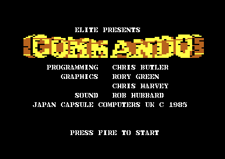
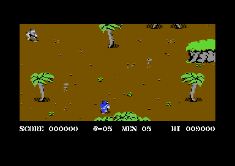
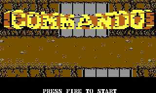
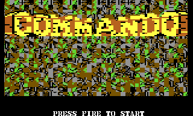
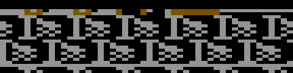
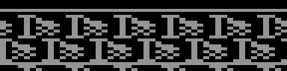

<meta charset="utf-8">
<meta name="viewport" content="width=device-width, initial-scale=1">
<title>Commando</title>
<link rel="preconnect" href="https://fonts.googleapis.com">
<link rel="stylesheet" href="https://fonts.googleapis.com/css2?family=Lato:wght@400;700;900&family=IBM+Plex+Mono:wght@400;500&display=swap">
<style>
:root{
  --bg:#23262d; --paper:#e9e7e1; --surface:#ffffff; --surface-2:#f1efea; --line:#d5d3cc; --line-soft:#e0ded8;
  --ink:#2f3136; --ink-soft:#55585f; --ink-mute:#80838a;
  --link:#1f5fa8; --link-hover:#154480; --accent:#1f5fa8;
  --amber:#c25a00; --cyan:#1f5fa8; --coral:#d04a3a; --green:#2a8a4a; --violet:#4a5bd6; --hl:#fff0c2;
  --chip:#2f3136; --chip-ink:#ffffff;
  --c64blue:#40318d; --c64grey:#686868;
  --fd:'Lato',system-ui,sans-serif; --fb:'Lato',system-ui,sans-serif; --fm:'IBM Plex Mono',ui-monospace,Menlo,monospace;
  --col:1080px; --gx:68px; --fs:17px; --lh:1.6; --hw:900; --h1:46px; --h2:26px; --sy:48px; --pp:26px; --r:10px;
  --plate-shadow:0 1px 2px rgba(0,0,0,.05),0 4px 14px rgba(0,0,0,.05);
}
*{box-sizing:border-box}
html{background:var(--bg);min-height:100%}
body{background:var(--paper);color:var(--ink);font-family:var(--fb);font-size:var(--fs);line-height:var(--lh);max-width:var(--col);margin:0 auto;min-height:100vh;padding:0 0 4rem}
h1,h2,h3{font-weight:var(--hw);letter-spacing:-.01em;text-wrap:balance;color:var(--ink);margin:0}
.wrap{padding:0 var(--gx)}
.hero{padding:48px var(--gx) 8px;text-align:left}
.eyebrow{font-family:var(--fm);font-size:12px;letter-spacing:.08em;text-transform:uppercase;color:var(--ink-mute);margin:0 0 10px}
.hero h1{font-size:var(--h1);line-height:1.15;letter-spacing:-.02em;margin:0 0 14px}
.hero .sub{margin:0 0 .6em;color:var(--ink-soft)}
section{padding:var(--sy) 0 24px}
section:last-of-type{border-bottom:none}
.fig{font-family:var(--fm);font-size:12px;letter-spacing:.08em;text-transform:uppercase;color:var(--ink-mute);margin:0 0 10px}
h2.t{font-size:var(--h2);margin-bottom:12px}
.lede{color:var(--ink-soft);margin:0 0 30px}
.plate{background:var(--surface);border:1px solid var(--line);border-radius:var(--r);padding:var(--pp);box-shadow:var(--plate-shadow)}
.cap{font-size:14px;color:var(--ink-mute);margin-top:14px;line-height:1.55}
.cap b{color:var(--ink);font-weight:700}
code{font-family:var(--fm);font-size:.82em;background:var(--chip);color:var(--chip-ink);border-radius:4px;padding:2px 6px;white-space:nowrap}

.cm-cv{display:block;max-width:100%;height:auto;image-rendering:pixelated;background:#000;border-radius:4px}
.cm-shots{display:grid;grid-template-columns:repeat(auto-fit,minmax(260px,1fr));gap:14px}
.cm-shots img{display:block;width:100%;height:auto;image-rendering:pixelated;border-radius:4px}
.cm-row{display:flex;flex-wrap:wrap;gap:8px 10px;align-items:center;margin:12px 0 0;font-family:var(--fm);font-size:13px;color:var(--ink-soft)}
.cm-row button{font:inherit;background:var(--surface);border:1px solid var(--line);border-radius:6px;padding:5px 12px;color:var(--ink);cursor:pointer}
.cm-row button:hover{border-color:var(--ink-mute)}
.cm-row button[aria-pressed="true"]{background:var(--chip);color:var(--chip-ink);border-color:var(--chip)}
.cm-row label{display:inline-flex;align-items:center;gap:6px;cursor:pointer}
.cm-range{flex:1;min-width:180px}
.cm-read{font-family:var(--fm);font-size:13px;color:var(--ink);margin:10px 0 0;min-height:1.6em}
.cm-map{display:flex;gap:14px;align-items:flex-start}
.cm-map .cm-main{flex:1;min-width:0}
.cm-mini{flex:none;width:80px;cursor:pointer;image-rendering:pixelated;border-radius:3px;background:#000;display:block}
.cm-tbl{width:100%;border-collapse:collapse;font-size:14.5px;margin:6px 0 0}
.cm-tbl th,.cm-tbl td{text-align:left;padding:6px 10px 6px 0;border-bottom:1px solid var(--line-soft);vertical-align:top}
.cm-tbl th{font-family:var(--fm);font-size:12px;font-weight:500;letter-spacing:.04em;text-transform:uppercase;color:var(--ink-mute)}
.cm-tbl td.cm-n{font-family:var(--fm);font-size:13px;white-space:nowrap}
.cm-scroll{overflow-x:auto}
.cm-miss{font-family:var(--fm);font-size:13px;color:var(--coral);margin:8px 0 0}
.cm-key{display:inline-block;width:11px;height:11px;border-radius:2px;margin:0 2px 0 0;vertical-align:-1px}
.cm-strip{display:block;width:100%;height:28px;image-rendering:pixelated;border-radius:3px;background:#000}
.cm-pair{display:grid;grid-template-columns:1fr 1fr;gap:14px}
.cm-pair p{margin:6px 0 0;font-family:var(--fm);font-size:12.5px;color:var(--ink-mute)}
.cm-slots{display:grid;grid-template-columns:repeat(11,1fr);gap:6px;margin:14px 0 0}
.cm-slot{border:1px solid var(--line);border-radius:6px;padding:6px 4px;text-align:center;font-family:var(--fm);font-size:12px;line-height:1.35;color:var(--ink-soft);background:var(--surface)}
.cm-slot b{display:block;font-weight:500;color:var(--ink-mute);font-size:11px}
.cm-slot span{display:block;color:var(--ink);min-height:1.35em}
.cm-slot i{display:block;font-style:normal;color:var(--amber);min-height:1.35em}
.cm-slot.now{border-color:var(--amber);box-shadow:0 0 0 2px var(--amber) inset}
.cm-slot.gone span{color:var(--coral);text-decoration:line-through}
.cm-pair img{display:block;width:100%;height:auto;image-rendering:pixelated;border-radius:4px;background:#000}
.cm-hi{font-family:var(--fm);font-size:13px}
.cm-hi td{padding:4px 8px 4px 0}
.cm-hi td:last-child{text-align:right;padding-right:0}
.cm-hi tr.new td{background:var(--hl)}
.cm-hi tr.bug td{background:#fbe1dc;color:var(--coral)}
.cm-hi tr.spare td{color:var(--ink-mute)}
.cm-hi-score{font-family:var(--fm);font-size:14px;color:var(--ink);min-width:5.5em;text-align:right}
@media (max-width:700px){:root{--gx:18px;--pp:14px;--h1:36px}#cm-table .cm-pair{grid-template-columns:1fr 1fr;gap:10px}.cm-hi{font-size:11.5px}.cm-hi td{padding:3px 4px 3px 0}.cm-map{flex-direction:column}.cm-mini{display:none}.cm-pair{grid-template-columns:1fr}.cm-slots{grid-template-columns:repeat(6,1fr)}}
</style>
<!-- tabs -->
<header class="hero">
  <p class="eyebrow">1985 · Elite Systems</p>
  <h1>Commando</h1>
  <p class="sub">An enemy soldier fires only at a player in the direction he already faces, and he works out that direction with a sum that loses its carry. A soldier on one strip of the screen, a little right of the middle, takes a player on his left for one on his right, turns away from him and fires the other way.</p>
</header>
<main class="wrap">

<section>
  <p class="fig">01 · The game</p>
  <h2 class="t">One soldier against an army</h2>
  <p class="lede">The player is Super Joe, a commando on foot, walking up a battlefield that scrolls down the screen as he goes.</p>
  <div class="plate cm-shots">
    
    
  </div>
  <p class="cap">The title screen and the first seconds of play, from the emulator. Under the battlefield: the score, the grenades left and the lives (MEN).</p>
  <p>The joystick moves Super Joe in eight directions and fire shoots his machine gun the way he faces. Space throws a grenade straight up the screen, over walls and into trenches, where bullets cannot reach. Soldiers run in, lie in wait, throw grenades and fire back, and lorries, motorcycles and a jeep cross the field. Running into a soldier or a vehicle costs a life, and so do a bullet, a blast and a step into water or a pit.</p>
  <p>Each area is a long map with a wall and a gate at the top, or in the third area a fortress. When Super Joe reaches it, twenty soldiers come out one after another, and the area is won once all twenty have come and none is left standing. After the third area the game starts again from the first, faster.</p>
  <p>The disk this page was made from is not the 1985 release. It is a crack released by REMEMBER in 1997, which added instructions, a trainer and a saver that keeps the high scores on the disk. What it added is at the end of the page. The crack also claims a bug fix, which this page could not find.</p>
</section>

<section>
  <p class="fig">02 · The music</p>
  <h2 class="t">Music: Rob Hubbard's three tunes, on the game's own driver</h2>
  <p class="lede">The title tune runs under the whole game, from the title screen through every area, and starts again at each new area. A second tune plays while a name goes into the high-score table, and a short third one between areas.</p>
  <div class="plate"><div id="cm-music"></div>
  <p class="cap">Rob Hubbard's driver (<code>$5000</code>), ported to JavaScript and played through the site's model of the SID. The port was run beside the game's own code in a 6502 simulator, on the bytes of this page's listing: every write it makes to the SID matched the game's, in order, frame by frame, over 25,000 frames of the title tune, all of the other two, each of the sixteen sound effects alone, and the effects asked for over the title tune as the game asks for them. The game never sets the SID's filter, so the player leaves it out. The bass on the third voice goes down to 41 Hz, which laptop and phone speakers barely play.</p></div>
  <p>The tunes are listed at <code>$56FF</code>: for each voice, a track, which is a list of pattern numbers, and a speed. All three are built from 45 patterns of notes (<code>$5711</code>) and thirteen instruments of eight bytes each (<code>$5591</code>).</p>
  <table class="cm-tbl"><thead><tr><th>Tune</th><th>Plays</th><th>A step every</th><th>Length</th></tr></thead><tbody>
    <tr><td class="cm-n">0</td><td>on the title screen and through every area</td><td class="cm-n">3 frames</td><td>3,936 steps, 3 min 56 s, then repeats</td></tr>
    <tr><td class="cm-n">1</td><td>while a name goes into the high-score table</td><td class="cm-n">4 frames</td><td>768 steps, 1 min 1 s, then repeats</td></tr>
    <tr><td class="cm-n">2</td><td>between areas</td><td class="cm-n">3 frames</td><td>128 steps, 7.7 s, then stops</td></tr>
  </tbody></table>
  <p>An instrument is a waveform, an envelope, a pulse width and a byte of effects that the driver applies every frame (<code>$519B</code>): vibrato, a pulse width that sweeps up and down, a drum that drops its pitch, a slide, and a trill an octave up on every other frame. The driver changes its own data as it plays. A sweeping pulse width is written back into the instrument it came from, so an instrument does not sound the same the second time it is used.</p>
</section>

<section>
  <p class="fig">03 · The battlefield</p>
  <h2 class="t">Every area's map, from the start line to the gate</h2>
  <p class="lede">Each area is one map, 40 characters wide and 200 rows deep, built from the area's own character set. Play starts near the bottom and the gate is at row 0. The screen shows 21 rows at a time.</p>
  <div class="plate" id="cm-maps">
    <div class="pick"><button class="step" data-d="-1" aria-label="Previous area">‹</button><select aria-label="Area"></select><button class="step" data-d="1" aria-label="Next area">›</button></div>
    <div class="cm-map"><div class="cm-main"><canvas class="cm-cv" width="640" height="336" role="img" aria-label="The play area of the chosen map, 21 rows"></canvas></div>
    <canvas class="cm-mini" width="80" height="400" role="img" aria-label="The whole map; click to move the screen"></canvas></div>
    <div class="cm-row"><input class="cm-range" type="range" min="0" max="1432" value="1320" aria-label="Map row at the top of the screen">
      <button type="button" data-walk aria-pressed="false">Walk up</button></div>
    <div class="cm-row">
      <label><input type="checkbox" data-o="terrain"> Terrain: <span class="cm-key" style="background:#e04040"></span>wall <span class="cm-key" style="background:#40c040"></span>passed behind <span class="cm-key" style="background:#4080ff"></span>water or pit</label>
      <label><input type="checkbox" data-o="spawn" checked> Spawn list</label>
      <label><input type="checkbox" data-o="check" checked> Restart rows</label>
      <label><input type="checkbox" data-o="unused"> <span class="cm-key" style="background:#7a3fb0"></span>Unused fourth list</label>
    </div>
    <p class="cm-read"></p>
    <p class="cap">Drawn by this page from the maps (<code>$6000</code>, <code>$8000</code>, <code>$A000</code>), the character sets (<code>$C000</code>, <code>$C800</code>, <code>$D800</code>) and the colours (<code>$40BC</code>) in the listing, with the gate and area 1's bunkers stamped in as every life's start stamps them (<code>$3DE0</code>). Drawn that way, all three maps match the game's memory in play byte for byte. <b>Walk up</b> scrolls the map a pixel a frame, the game's speed while the player pushes up near the top of his zone.</p>
  </div>
  <p>The map scrolls down a pixel at a time while Super Joe pushes up near the top of his zone (<code>$3A8C</code>). Every eighth pixel the map moves a whole row, and on that frame the main loop redraws all 21 rows of the playfield from the map and skips the game's logic (<code>$08CB</code>). There is no scrolling back: the screen only ever moves up the map.</p>
  <p>Every character of a set has a class in the area's terrain table (<code>$178B</code>, <code>$188B</code>, <code>$1A8B</code>). A wall stops Super Joe, turns soldiers aside and stops bullets. Scenery such as a palm's leaves lets the sprites pass behind it. Water, a pit or a trench drops him in. The terrain overlay colours each character by its class.</p>
  <p>The enemies come from the area's spawn list, one entry per enemy: a row, a position and one of 28 handlers (<code>$1BE8</code>). When the row in an entry reaches the top of the screen, the spawner starts that enemy (<code>$1B8B</code>), and the marks on the map show those rows. Between entries, an empty enemy slot now and then sends a rifle soldier down from the top or a grenade thrower in from a side (<code>$2D63</code>). <b>Unused fourth list</b> draws a spawn list that no area uses (<code>$1D42</code>, section 12) on whichever map is shown, with a box where an entry stands at a place of its own.</p>
  <p>A lost life does not send Super Joe back to the start. The game moves the screen to the first restart row at or below the row it had reached (<code>$3DE0</code>, <code>$3EBC</code>): rows 19, 61, 97 and 131, and the start row, 175 in the first area and 166 in the others. A new area parks the screen at row 165 and then moves it to the restart row below that, so play begins at the last restart row. The restart also brings back every enemy in the spawn list within 21 rows of the top (<code>$109B</code>), puts the gate back shut and rebuilds any bunker a grenade has wrecked.</p>
</section>

<section>
  <p class="fig">04 · Enemy fire</p>
  <h2 class="t">A soldier fires only where he already faces</h2>
  <p class="lede">Point at the field to move Super Joe. The shading shows which way the soldier would have to face to shoot at him from each place, and the line shows a shot when the facing matches.</p>
  <div class="plate" id="cm-aim1"></div>
  <p>A soldier sorts the player's place into one of eight directions with a box around himself, 60 pixels wide and 40 high (<code>$33C7</code>). A player right of the box is to his right, a player above it is up, and a player both right of it and above it is up and to the right. Inside the box the soldier does not fire at all. He fires only when he already faces the player's direction, and a rifle soldier turns to face the player only once every 32 frames, on the frames where the frame counter's low five bits are 0 (<code>$3219</code>, <code>$310A</code>). A player who keeps moving round a soldier stays out of his line most of the time.</p>
  <p>The box makes the straight shots narrow. A soldier fires straight up or straight down only at a player within 30 pixels to either side of him, and that bullet flies straight. A diagonal shot goes one pixel across for each pixel down, whatever the angle to the player (<code>$3517</code>, <code>$3527</code>).</p>
</section>

<section>
  <p class="fig">05 · The aim</p>
  <h2 class="t">Bug: soldiers just right of the middle fire away from the player</h2>
  <p class="lede">The soldier below stands at x 232, a little right of the middle of the screen. To him, a player almost anywhere on his left is on his right.</p>
  <div class="plate" id="cm-aim2"></div>
  <p>The test adds 30 to the soldier's x and compares the sum with the player's x (<code>$3117</code>, <code>$33D7</code>). Both are one byte, the low eight bits of a nine-bit position, and the carry out of the sum is dropped. For a soldier at x 226 to 255, the sum passes 255 and wraps round to a small number, so any player further right than that number counts as being to the right. A soldier at 232 adds 30 to make 262, keeps 6, and sees a player at 100 on his right. He turns to face right, and fires right.</p>
  <p>In the emulator, a rifle soldier held at x 232 with the player held level with him at x 100 turned to face right and fired every bullet to the right, two pixels a frame away from the player. Moved to x 200, where the sum does not wrap, the same soldier faced left and fired at him. These x positions count from 24 pixels left of the picture, so on the 320-pixel screen the band runs from 202 to 231, and the soldiers in it are the ones walking down the right of the field.</p>
  <p>The code that turns a soldier and the code that fires make the same comparison, so the soldier is consistent: he faces the way he shoots. The up-and-down test adds 20 to the soldier's y in the same way, but that sum wraps only for a soldier within 20 pixels of 255, below the playfield, so it never shows.</p>
</section>

<section>
  <p class="fig">06 · Progression</p>
  <h2 class="t">Soldiers fire faster in each area, until the third loop starts over</h2>
  <p class="lede">A rifle soldier may fire once every 64 frames in the first area, every 32 in the second and every 16 in the third. The game keeps counting areas after the third, and the rate follows the count.</p>
  <div class="plate" id="cm-loop">
    <div class="pick"><button class="step" data-d="-1" aria-label="Previous area played">‹</button><select aria-label="Area played"></select><button class="step" data-d="1" aria-label="Next area played">›</button></div>
    <canvas class="cm-strip" width="512" height="28" role="img" aria-label="The frames on which a soldier may fire"></canvas>
    <p class="cm-read"></p>
    <p class="cap">The strip is 256 frames of a soldier's timer: a mark on each frame on which the timer AND the area's fire mask (<code>$3EB4</code>) is 0. A soldier fires on such a frame only when the game has a free slot for his bullet and he faces Super Joe, as the section above shows.</p>
  </div>
  <p>The area counter (<code>$04F3</code>) goes up by one after every area won, and skips every value whose low two bits are 2 (<code>$0939</code>): 0, 1, 3, 4, 5, 7, 8 and so on. Its low two bits pick the map, the character set, the spawn list and the terrain. Its low three bits pick the fire mask, which the game sets at the start of every life (<code>$3E86</code>): <code>$3F</code> for counter 0, <code>$1F</code> for 1, and <code>$0F</code> for 2 to 7. So the second time round, soldiers in all three areas fire at the fastest rate, and the third time round the rate starts again at 64. The fire mask drops back to <code>$3F</code> as each gate soldier comes out (<code>$2CBB</code>), so the fight at the gate is at the first area's rate in every loop.</p>
  <p>Nothing else gets harder. The maps, the spawn lists and the twenty gate soldiers are the same in every loop, and so is the chance that the next gate soldier comes out: one in 128 a frame for each free enemy slot (<code>$2CBB</code>).</p>
</section>

<section>
  <p class="fig">07 · The play screen</p>
  <h2 class="t">One frame, rebuilt from memory</h2>
  <p class="lede">The first area at the start of play, drawn by this page from the game's memory and the video chip's registers.</p>
  <div class="plate"><canvas id="cm-frame" class="cm-cv" width="768" height="544" role="img" aria-label="The play screen rebuilt from one frame of memory"></canvas>
  <div class="cm-row"><label><input type="checkbox" id="cm-bands"> Show where the raster interrupts change the chip</label></div>
  <p class="cap">One frame recorded in VICE with every write to the video chip during it, and drawn here line by line with the state in force when the beam got there: 104,448 of 104,448 pixels match the emulator's own picture of the same frame.</p></div>
  <p>The screen is 24 rows of multicolour characters (<code>$4049</code>): 21 rows of playfield copied from the map, and under them the score line in the text character set. The playfield's colours are a brown background, black and grey shared by every character, and green, or blue in the second area, as each character's own colour (<code>$40BC</code>).</p>
  <p>Everything that moves is a sprite, and there are sixteen of them in the game's tables against the video chip's eight. Slot 0 is Super Joe, slots 1 to 3 his bullets, slot 4 his grenade and slots 5 to 15 the enemies. On each pass of the game's logic, <code>$3F06</code> sorts the slots by height, and a chain of raster interrupts hands them out down the screen. At the top, <code>$41A7</code> puts the first eight on the eight sprites. Below the fourth of those, <code>$4266</code> reuses sprites 7 to 4 for slots 8 to 11, and further down <code>$436B</code> reuses sprites 3 to 0 for the last four. Below the playfield, <code>$4119</code> blanks the screen while it switches to the text character set, and <code>$416A</code> shows the score line.</p>
  <p>The game never reads the video chip's collision registers. Whether Super Joe touches an enemy, or a bullet meets a wall, comes from the positions in the game's own tables (<code>$100F</code>, <code>$3917</code>), which works for sixteen sprites as well as for eight.</p>
</section>

<section>
  <p class="fig">08 · The player and the enemies</p>
  <h2 class="t">Every sprite in the game</h2>
  <p class="lede">The 112 sprite shapes at <code>$E400</code>, drawn from the listing. Click one to see what it is.</p>
  <div class="plate"><canvas id="cm-cast" class="cm-cv" width="728" height="368" role="img" aria-label="Every sprite shape in the game"></canvas>
  <p class="cm-read" id="cm-cast-read">&nbsp;</p>
  <p class="cap">Multicolour sprites with the shared colours the game uses in play, light grey and black (<code>$4049</code>), on the playfield's brown. The game sets each sprite's own colour slot by slot; here it is one colour for each kind of thing.</p></div>
</section>

<section>
  <p class="fig">09 · Weapons</p>
  <h2 class="t">Super Joe's weapons</h2>
  <p class="lede">A press of fire gives two bullets and no more until the button is let go (<code>$39C3</code>). Space throws a grenade.</p>
  <p>A counter set to <code>$FF</code> while fire is up counts once a frame for each free bullet slot. A bullet goes when the counter reaches 0 and again when it reaches 8, two frames later with all four shot slots free, and there the counter stops. Held down for 40 frames at a time, four presses made eight bullets in the emulator. A bullet flies for 15 frames and stops at a wall.</p>
  <p>A grenade flies for 40 frames, then bursts for 20, killing anything a grenade can harm within 18 pixels across and 22 up or down (<code>$365C</code>, <code>$371E</code>). The burst kills a soldier who walks into it after it has gone off, too. Super Joe starts with five grenades, and every new life tops the count back up to five (<code>$3EA3</code>).</p>
  <p>Each enemy is marked with what can hit it (<code>$2526</code>):</p>
  <table class="cm-tbl"><thead><tr><th>Hit by</th><th>Enemies</th></tr></thead><tbody>
    <tr><td>a bullet or a grenade</td><td>every soldier on the move, the green soldier and the grenade and bomb throwers among them</td></tr>
    <tr><td>a grenade only</td><td>a soldier lying in wait, in a trench or in a foxhole, a bunker's gun, the lorry and the sniper</td></tr>
    <tr><td>a bullet only</td><td>the two guards; shooting both frees their prisoner (<code>$2443</code>)</td></tr>
    <tr><td>nothing</td><td>the prisoner, the motorcycle, the crossing vehicle and the jeep</td></tr>
  </tbody></table>
</section>

<section>
  <p class="fig">10 · The score line</p>
  <h2 class="t">Bug: ten lives show as 0 and a block</h2>
  <p class="lede">Press the buttons to change the score line. It is drawn with the game's own font and filled in by a port of its own routines.</p>
  <div class="plate" id="cm-hud">
    <canvas class="cm-cv" width="640" height="16" role="img" aria-label="The score line"></canvas>
    <div class="cm-row">
      <button type="button" data-a="pts" data-v="3">Shoot a soldier (300)</button>
      <button type="button" data-a="pts" data-v="20">Win an area (1,400)</button>
      <button type="button" data-a="loop">Pick up a box</button>
      <button type="button" data-a="throw">Throw a grenade</button>
      <button type="button" data-a="life" data-v="-1">Lose a life</button>
      <button type="button" data-a="life" data-v="1">Add a life</button>
      <button type="button" data-a="near">Jump to 999,900</button>
      <button type="button" data-a="reset">Start again</button>
    </div>
    <p class="cm-read"></p>
    <p class="cap">The port was run beside the game's routines in a 6502 simulator on the listing's bytes: every BCD score with each amount the game adds, every grenade count from 0 to 255 with a box and with a throw, a box picked up in each of the eleven enemy slots at 300 scores, and every lives count: 54,067 cases. The score, the counts and the digits on the screen matched every time.</p>
  </div>
  <p>The lives (<code>$0500</code>) are an ordinary binary count, but the routine that prints them (<code>$13F1</code>) treats them like the score and the grenades, which are kept as binary-coded decimal. The routine splits the byte into its two halves and adds <code>$21</code>, the font's 0, to each. For nine lives or fewer that is right. Ten lives is <code>$0A</code>, so the second digit is the glyph after 9, a block, and sixteen lives shows as 10. Lives come from the score, one for every 10,000 points (<code>$134F</code>), so a good player gets there. The emulator showed MEN 0 and the block with the count set to eleven and one life then lost.</p>
  <p>The other two counts on the line wrap round. The score is kept in hundreds as four BCD digits, so 999,900 plus 1,400 for an area makes 001,300, and the carry still brings a life. A box adds three grenades with a decimal add that drops its carry, so 98 grenades and a box make 01 (<code>$2A8E</code>). Both were seen in the emulator.</p>
</section>

<section>
  <p class="fig">11 · The grenade box</p>
  <h2 class="t">Bug: a box that brings an extra life pays out twice</h2>
  <p class="lede">A box of grenades is worth three grenades and 1,000 points. When those points carry the score past a multiple of 10,000, Super Joe gets six grenades, 2,000 points and the life, and an enemy somewhere else on the screen disappears. Step through one pass of the enemy loop to see why.</p>
  <div class="plate" id="cm-box">
    <canvas class="cm-cv" width="640" height="16" role="img" aria-label="The score line"></canvas>
    <div class="cm-slots" role="list" aria-label="The eleven enemy slots"></div>
    <div class="cm-row">
      <button type="button" data-a="step">Next slot</button>
      <button type="button" data-a="all">Run the pass</button>
      <button type="button" data-a="reset">Start again</button>
      <label><input type="checkbox" data-carry checked> Score 9,500, so the box brings a life</label>
    </div>
    <p class="cm-read" aria-live="polite"></p>
    <p class="cap">Super Joe is standing on the box in slot 4, among four rifle soldiers. The loop is a port of the game's (<code>$2495</code>), and the score line uses the same port as the one above. The test runs the game's own loop in the simulator with the box in each of the eleven slots, among rifle soldiers, with and without the carry. The slots it runs and their order, the slot the box frees, and the score and the counts were the port's every time.</p>
  </div>
  <p>The box is one of the enemies. It sits in an enemy slot, and the enemy loop (<code>$2495</code>) runs every slot on each pass of the game's logic with the slot's number, 0 to 10, in the X register. When Super Joe stands on the box, its routine adds the grenades and the points, frees the slot whose number is in X (<code>$3570</code>), asks for its sound effect and returns (<code>$2A5A</code>). The routine that takes a sound effect request hands back 0 in X (<code>$5F56</code>), so the loop always carries on from slot 1, and the slots below the box get a second turn in that pass.</p>
  <p>When the points bring an extra life, the life asks for its own sound effect, inside the points routine, before the box frees its slot. X is 0 by then, so the box frees slot 0 instead of its own. The loop carries on from slot 1, comes to the box again in the same pass, and Super Joe is still standing on it, so it pays a second time; this time there is no carry, and the box frees its own slot. In the emulator, a box in slot 2 at 9,500 points left 11,500 points, eleven grenades from five and six lives from five, and the rifle soldier who had been in slot 0, up the screen, was gone. Whatever stands in slot 0 at that moment disappears, and only a box in slot 0 itself pays once.</p>
</section>

<section>
  <p class="fig">12 · The skipped area</p>
  <h2 class="t">Secret: the skipped area 2 would have been drawn in the game's font</h2>
  <p class="lede">The areas are numbered 0, 1 and 3. Area 2 has an entry in every per-area table, and the counter steps over it.</p>
  <div class="plate" id="cm-area2">
    <div class="cm-pair"><div><canvas class="cm-cv" width="640" height="336" role="img" aria-label="Area 1's map in its own character set"></canvas><p>Area 1, as played</p></div>
    <div><canvas class="cm-cv" width="640" height="336" role="img" aria-label="The same rows drawn with area 2's character set, the font"></canvas><p>Area 2: the same map in the font's character set</p></div></div>
    <div class="cm-row"><input class="cm-range" type="range" min="0" max="1432" value="440" aria-label="Map row at the top of the screen"></div>
    <p class="cap">Both drawn from the listing: area 1's map (<code>$8000</code>) with area 1's character set (<code>$C800</code>) and with area 2's (<code>$D000</code>), in the colours each area has at <code>$40BC</code>.</p>
  </div>
  <p>The area counter's low two bits pick everything about an area (<code>$1427</code>), and after each area won the game adds one, then adds one again if the low two bits are 2 (<code>$0939</code>). Area 2's entries are filled in all the same, mostly with other areas' data:</p>
  <table class="cm-tbl"><thead><tr><th>Table</th><th>Area 2's entry</th><th>Where</th></tr></thead><tbody>
    <tr><td>map</td><td>area 1's</td><td class="cm-n"><code>$3EB0</code></td></tr>
    <tr><td>restart rows</td><td>area 1's</td><td class="cm-n"><code>$3ED0</code></td></tr>
    <tr><td>spawn list</td><td>area 3's</td><td class="cm-n"><code>$1485</code></td></tr>
    <tr><td>terrain</td><td>area 3's</td><td class="cm-n"><code>$14A5</code></td></tr>
    <tr><td>the ordinal in its end message</td><td>3RD, as area 3's</td><td class="cm-n"><code>$1306</code></td></tr>
    <tr><td>character set</td><td>the game's font</td><td class="cm-n"><code>$D000</code></td></tr>
  </tbody></table>
  <p>Played, area 2 would be area 1's layout drawn in letters, digits and pieces of scenery, with area 3's enemies arriving in it. The game does put area 2's character set on the screen: the title, the name entry and the messages between areas set the counter to 2 while they run, which is how they get the font (<code>$0F53</code>, <code>$0C9E</code>, <code>$1270</code>). An unused fourth terrain table (<code>$198B</code>) and an unused fourth spawn list (<code>$1D42</code>) sit in memory beside the three that are used.</p>
  <p>The fourth list holds the game's only doors and its only mortar man. Its 24 enemies are nine doors that each let a soldier out, a box, a motorcycle, a grenade thrower, two walking soldiers, two lorries, four vehicles crossing, a soldier in a trench, the mortar man, the gate opening and a green soldier. Its first two rows, 198 and 196, are below the start of every area. Tick <b>Unused fourth list</b> on the maps in section 03 to draw it on any of the three. It fits none of them as they are. Eight of its nine doors stand in open ground on every map, and the ninth, at row 157, falls on the left gate of area 3's first wall. Two things in it do match. On area 3's map, its soldier in a trench and its mortar man, at row 9, stand in the fortress's two windows, a row above the two soldiers that area 3's own list puts there (<code>$1DA7</code>). And its two walking soldiers come in after 80 frames at the height of row 99, as area 1's two do, with its grenade thrower at row 104, as area 1's is (<code>$1CC1</code>).</p>
</section>

<section>
  <p class="fig">13 · The sound effects</p>
  <h2 class="t">Sound: the game never asks for half its sound effects</h2>
  <p class="lede">The driver holds sixteen effects (<code>$55F9</code>) and the game asks for eight of them. Each button plays one alone.</p>
  <div class="plate"><div id="cm-sfx"></div>
  <p class="cap">The same port as the music, starting one effect as the game's call at <code>$500F</code> does. The effect's frequencies come from the music's note table.</p></div>
  <p>An effect is sixteen bytes: the start of the first two voices' registers, a first and a last note, and a byte that says whether to step the notes up or down, how many frames each step lasts and whether to flip each voice's gate as it goes (<code>$5531</code>, <code>$53A5</code>). While an effect sounds, the music gives up voices 1 and 2 to it and keeps playing on voice 3 (<code>$538F</code>). In the title tune that third voice carries the bass and nearly all the drums, so under a grenade the tune loses its upper parts and keeps its rhythm.</p>
  <table class="cm-tbl"><thead><tr><th>Effect</th><th>Asked for when</th><th>Where</th></tr></thead><tbody>
    <tr><td class="cm-n">0</td><td>a box of grenades is picked up</td><td class="cm-n"><code>$2AA6</code></td></tr>
    <tr><td class="cm-n">1</td><td>a grenade is thrown</td><td class="cm-n"><code>$3913</code></td></tr>
    <tr><td class="cm-n">2</td><td>a grenade destroys a bunker</td><td class="cm-n"><code>$37BC</code></td></tr>
    <tr><td class="cm-n">4</td><td>Super Joe is hit, or falls</td><td class="cm-n"><code>$1060</code>, <code>$3C17</code></td></tr>
    <tr><td class="cm-n">5</td><td>the jeep comes up from behind</td><td class="cm-n"><code>$1ECB</code></td></tr>
    <tr><td class="cm-n">9</td><td>the third area is won</td><td class="cm-n"><code>$0933</code></td></tr>
    <tr><td class="cm-n">11</td><td>a letter is shot in the name entry</td><td class="cm-n"><code>$0DCC</code></td></tr>
    <tr><td class="cm-n">12</td><td>an extra life</td><td class="cm-n"><code>$136B</code></td></tr>
    <tr><td class="cm-n">3, 6-8, 10, 13-15</td><td>never</td><td></td></tr>
  </tbody></table>
</section>

<section>
  <p class="fig">14 · Points</p>
  <h2 class="t">Secret: the green soldier's 2000 is worth 1,400</h2>
  <p class="lede">Shoot the green soldier and a white 2000 rises where he fell. The score goes up by 1,400.</p>
  <div class="plate"><canvas id="cm-green" class="cm-cv" width="384" height="126" role="img" aria-label="The green soldier and the score sprite reading 2000"></canvas>
  <p class="cap">The green soldier walking right (blocks <code>$B9</code>, <code>$BA</code>) and the score sprite he leaves (block <code>$BC</code>), drawn from the listing.</p></div>
  <p>The points for every enemy are one table of BCD hundreds (<code>$254F</code>), which <code>$23E7</code> adds when the enemy is hit:</p>
  <table class="cm-tbl"><thead><tr><th>Points</th><th>Enemies</th></tr></thead><tbody>
    <tr><td class="cm-n">200</td><td>a soldier in a foxhole</td></tr>
    <tr><td class="cm-n">300</td><td>most soldiers</td></tr>
    <tr><td class="cm-n">500</td><td>a soldier in a trench, a bomb thrower, the sniper</td></tr>
    <tr><td class="cm-n">1,000</td><td>a guard, either half of the lorry, and a bunker's gun (paid by the grenade's own path, <code>$37B1</code>)</td></tr>
    <tr><td class="cm-n">1,400</td><td>the green soldier</td></tr>
  </tbody></table>
  <p>The green soldier's entry is <code>$14</code>, 1,400. After adding it, <code>$23E7</code> shows block <code>$BC</code>, the sprite that reads 2000. The guard's score sprite, block <code>$BD</code>, reads 1000 and matches his points. The green soldier appears once in each loop, when the screen reaches the top of the first area's map.</p>
</section>

<section>
  <p class="fig">15 · This copy</p>
  <h2 class="t">What REMEMBER's crack changed in the game</h2>
  <p class="lede">Set beside the 1985 release, this copy differs in 29 of the game's 19,450 bytes. The maps, the character sets and the sprites are the same, apart from two bytes of a glyph no map uses. Everything else REMEMBER added sits in memory the 1985 game never uses: a menu, two pages of instructions, a trainer, and a saver for the high scores.</p>
  <div class="plate cm-scroll"><table class="cm-tbl"><thead><tr><th>Where</th><th>The 1985 release</th><th>This copy</th></tr></thead><tbody>
    <tr><td class="cm-n"><code>$085C</code>-<code>$0868</code></td><td>copies a trap for the reset button to <code>$8000</code> (section 17)</td><td>turns the screen on, then eight no-operations</td></tr>
    <tr><td class="cm-n"><code>$09A5</code>, <code>$0A0D</code></td><td>6: the high-score walk starts at the seventh entry (section 16)</td><td>7: the walk starts at the eighth</td></tr>
    <tr><td class="cm-n"><code>$0A4B</code>-<code>$0A4C</code></td><td>after a name, back to the title (<code>$0883</code>)</td><td>after a name, to the saver (<code>$44E0</code>)</td></tr>
    <tr><td class="cm-n"><code>$0A4E</code>-<code>$0A56</code></td><td>the nine bytes the trap copies</td><td>zeros</td></tr>
    <tr><td class="cm-n"><code>$38BE</code>-<code>$38C0</code></td><td>reads the keyboard</td><td>calls the area skip's hook (<code>$5F6A</code>), which reads it</td></tr>
    <tr><td class="cm-n"><code>$44E0</code>-<code>$4FFF</code></td><td>nothing loaded</td><td>the saver, the menu, the instructions and the trainer</td></tr>
    <tr><td class="cm-n"><code>$5F6A</code>-<code>$5FB1</code></td><td>two routines nothing calls: one plays the music from the KERNAL's interrupt, the other stops it</td><td>the area skip's hook and the menu's text</td></tr>
    <tr><td class="cm-n"><code>$C71E</code>-<code>$C71F</code></td><td><code>$FF</code> <code>$FF</code></td><td><code>$00</code> <code>$0A</code>: two rows of glyph <code>$E3</code> in area 0's character set, which area 0's map never uses</td></tr>
  </tbody></table>
  <p class="cap">The 1985 release is Elite's PAL disk from the C64 Preservation Project. Both copies were stopped in the emulator as they hand over to the game at <code>$0850</code> and compared byte for byte. The game's program is <code>$0850</code>-<code>$44DF</code> and <code>$5000</code>-<code>$5F69</code>, and the first five rows hold all 29 bytes that differ in it.</p></div>
  <p>The menu (<code>$4531</code>) asks T for the trainer or H for the high scores. T asks five questions, Y or N, and each Y patches the game before it starts:</p>
  <div class="plate cm-scroll"><table class="cm-tbl"><thead><tr><th>Trainer option</th><th>What it changes</th></tr></thead><tbody>
    <tr><td>Unlimited lives</td><td>the lost life (<code>$0996</code>) and the extra life (<code>$1363</code>) become reads, so the count never changes</td></tr>
    <tr><td>Unlimited grenades</td><td>the box's 3 (<code>$2A8F</code>) and the throw's 1 (<code>$3909</code>) become 0</td></tr>
    <tr><td>No falling</td><td>the fall into water or a pit (<code>$3C10</code>-<code>$3C5E</code>) becomes no-operations</td></tr>
    <tr><td>No collisions</td><td>the kill in the contact test (<code>$1056</code>-<code>$106D</code>) becomes no-operations</td></tr>
    <tr><td>Area skip</td><td>the Commodore key ends the area, through the hook in the grenade's key read (<code>$5F6A</code>), so it works only where a grenade could be thrown (<code>$38BE</code>)</td></tr>
  </tbody></table>
  <p class="cap">The lives and collision patches were used to keep Super Joe alive through this page's tests of the areas.</p></div>
  <p>The high-score saver is the other addition (<code>$44E0</code>). The game's table of eight names and scores (<code>$0EED</code>-<code>$0F47</code>) is loaded from the second file on the disk before the game starts, and the file on this disk holds the table the 1985 release starts with. After a name is entered, the jump that took the 1985 release back to the title goes to the saver instead (<code>$0A4A</code>), which writes the table back to the disk and starts the game again. A game with the trainer on saves nothing.</p>
</section>

<section>
  <p class="fig">16 · The high-score table</p>
  <h2 class="t">Bug: in the 1985 release, a low score overwrites eighth place</h2>
  <p class="lede">CSDb credits REMEMBER's crack with a bug fix, and this is it. In the 1985 release, a game that does not beat the seventh score writes its score over the eighth, under the eighth player's name and without asking for a name, even when it is lower. Pick a score.</p>
  <div class="plate" id="cm-table">
    <div class="cm-row"><input class="cm-range" type="range" min="0" max="100" step="1" value="25" aria-label="The score at the game's end, in hundreds"><span class="cm-hi-score"></span></div>
    <div class="cm-pair"><div><p>The 1985 release</p><table class="cm-tbl cm-hi" data-first="6"></table></div><div><p>This copy</p><table class="cm-tbl cm-hi" data-first="7"></table></div></div>
    <p class="cm-read" aria-live="polite"></p>
    <p class="cap">Both start from the table the game starts with (<code>$0EEE</code>, <code>$0F36</code>), which is the same in both copies, and both come from one port of the game's walk (<code>$09A4</code>), started at the seventh entry or the eighth. The test runs the game's own walk both ways over every score from 0 to 999,900 against that table, and over 400,000 random scores against 200 random tables. The table and whether a name was asked for were the port's every time.</p>
  </div>
  <p>After a game the score walks up the table from the bottom (<code>$09A4</code>). Each entry it beats or equals moves down one place, name and all, and the score goes in below the first entry it does not beat; the name entry follows (<code>$0C88</code>). The table holds eight entries and a spare ninth that is never shown. This copy starts the walk at the eighth entry, so a score that misses the table goes into the spare ninth, and the game goes back to the title without asking for a name (<code>$0A0C</code>).</p>
  <p>The 1985 release starts the walk at the seventh entry. The bytes at <code>$09A5</code> and <code>$0A0D</code> hold 6 where this copy has 7, and they are the only two bytes of the routine that differ. A score that beats the seventh is handled as in this copy. A score that does not stops the walk where it starts, goes in below the seventh, over the eighth, and the test for a name finds that the walk never moved and goes back to the title. So eighth place always shows the last game that missed seventh, under the name that was there before. In the emulator, a game of 2,500 in the 1985 release left DILK 002500 in eighth place, a game of 0 left DILK 000000, and neither asked for a name. This copy asked for a name at 2,500, sent DILK's 2,000 to the spare ninth entry, and changed nothing at 0.</p>
</section>

<section>
  <p class="fig">17 · The reset trap</p>
  <h2 class="t">Bug: after a reset, the 1985 release shows its title in the dark and never starts</h2>
  <p class="lede">The 1985 release catches the reset button and starts itself again instead of handing the machine to BASIC. The game that restarts runs its title and attract mode with the screen off, and fire never starts a game.</p>
  <p>At its start the game copies nine bytes to <code>$8000</code> (<code>$085C</code>): the game's start address, <code>$0850</code>, twice, then the letters CBM80 with their top bits set. Those nine bytes are a cartridge's signature. A reset makes the KERNAL look for the letters at <code>$8004</code> and, when they are there, jump to the address at <code>$8000</code>, so a reset switch restarts Commando. RESTORE, the other key that breaks into a program, does nothing in either copy, because the start points the NMI at an RTI (<code>$0A4D</code>).</p>
  <p>The KERNAL jumps to a cartridge before it sets up the chips, so the game restarts on chips the reset has cleared. The reset clears the processor port's direction register, and with the register at 0 the game's writes to <code>$01</code> change nothing. The I/O chips stay in view when the start copies the name entry's gunsight into the RAM beneath them (<code>$0A57</code>), so the 64 bytes go into the video chip instead, and the one that lands in <code>$D011</code>, <code>$20</code>, turns the display off. Nothing in the game turns it on again.</p>
  <p>The joystick is cut off the same way. The title starts a game when the first CIA's port A reads <code>$6F</code> (<code>$0FB2</code>): fire pressed, and bit 7 low. Bit 7 reads low only because the KERNAL makes that line an output and drives it low, and the reset has made every line of the port an input again, so with fire pressed the port reads <code>$EF</code>. In the emulator the restarted game cycled through its title and attract views and ignored fire. With the port set back as the KERNAL leaves it, the first press started a game.</p>
  <p>Behind the dark screen the restarted game draws area 3 wrongly as well. With the processor port's lines all inputs, they read high, which keeps the BASIC ROM in view at <code>$A000</code>, where area 3's map is, and the map is drawn from the ROM's bytes.</p>
  <div class="plate">
    <div class="cm-pair"><div><p>The attract view of area 3</p></div>
    <div><p>The same view after a reset, with the display put back on</p></div></div>
    <p class="cap">The 1985 release in the emulator, at area 3's row 169. For the second picture <code>$D011</code> was set to <code>$1B</code> just after the gunsight copy, which every later write to it keeps.</p>
  </div>
  <p>The signature also marks a game that is never reset. <code>$8000</code> is the first row of area 1's map, the top of the screen when the area's gate comes into view, and the copy writes over nine of its characters. Two pixel lines of them show at the top edge of the screen. REMEMBER's file holds the map's own nine characters there, and the crack never copies the signature.</p>
  <div class="plate">
    <div class="cm-pair"><div><p>The 1985 release: the signature in area 1's top row</p></div>
    <div><p>This copy: the map's own wall</p></div></div>
    <p class="cap">The top-left corner of the screen when area 1's gate comes into view, from the emulator, five times the size.</p>
  </div>
</section>

</main>
<footer style="margin:16px 0 0;padding:22px var(--gx) 0;border-top:1px solid #e0ded8;font-family:'IBM Plex Mono',ui-monospace,Menlo,monospace;font-size:12px;color:#80838a"><a href="https://github.com/gamesexplained/gamesexplained" style="color:#1f5fa8">gamesexplained</a> · Commando for the Commodore 64, explained from its code</footer>
<!-- the listing pieces this page's widgets read, which the build fills in from the listing -->
<script type="application/json" data-listing="listing.json">["$0F36-$0F37", "$148D-$14AC", "$14E4-$154F", "$1603-$1689", "$178B-$198A", "$1A8B-$1B8A", "$1C20-$1C48", "$1C99-$1CE1", "$1D22-$1DC9", "$1E0E-$1E2F", "$3EB0-$3ED7", "$40BC-$40E7", "$6000-$7F3F", "$8000-$9F3F", "$A000-$BF3F", "$C000-$FFC0"]</script>
<script src="../../lib/c64.js"></script>
<script src="../../lib/sid.js"></script>
<script>
/* commando-music */
/* Commando (Elite, 1985), music by Rob Hubbard: the game's music and sound-effect driver
   ($5000-$5F69), ported line by line so the site's SID model (../../lib/sid.js) can play it.
   data = { base, hex }: the driver's tables, variables, tunes and patterns ($5428-$5F0B) as the
   game is loaded, at its entry ($0850). The port keeps the driver's own memory, because the
   driver writes into its tables as it plays (the pulse widths in the instruments, $5591).
   init(0-2) starts a tune as $5000 does; init(3-18) plays sound effect 0-15 alone, as $5003 and
   then $500F would, and with data.sfx set init(0-15) does the same for effect 0-15. effect(n) asks
   for an effect over whatever plays, as the game's $500F does. test_music.js holds every frame's SID writes against the game's own code. */
function createDriver(data) {
  'use strict';
  const m = new Uint8Array(0x10000);
  for (let i = 0; i < data.hex.length / 2; i++) m[data.base + i] = parseInt(data.hex.substr(i * 2, 2), 16);
  const FREQ = 0x5428, VOFF = 0x54E8, CUROFF = 0x54EB, TRK = 0x54EC, PAT = 0x54EF, CNT = 0x54F2,
    LEN = 0x54F5, WAVE = 0x54F8, NOTE = 0x54FB, INS = 0x54FE, GATE = 0x5501, LENB = 0x5502,
    FLO = 0x5503, TMP = 0x5504, WTMP = 0x5505, VIBD = 0x5506, PW6 = 0x5507, VSTEP = 0x5508,
    VFREQ = 0x550A, VPOS = 0x550C, PWCNT = 0x550D, PWDIR = 0x5510, TEMPO = 0x5513, SPEEDS = 0x5514,
    SPEED = 0x5517, IOFF = 0x5518, STATE = 0x5519, FHI = 0x551A, FLOV = 0x551D, SLIDE = 0x5520,
    EFX = 0x5523, PWSTEP = 0x5524, FRAME = 0x5525, SFXOFF = 0x5526, SFX = 0x5527, OWN = 0x5528,
    ENOTE = 0x5529, ECNT = 0x552A, EEND = 0x552B, EINT = 0x552C, EFLAGS = 0x552D, EW1 = 0x552E,
    EW2 = 0x552F, EMODE = 0x5530, INSTR = 0x5591, SFXTAB = 0x55F9, CURTRK = 0x56F9, TUNES = 0x56FF,
    PATLO = 0x5711, PATHI = 0x573E;
  const sid = new Uint8Array(25);
  let writes = [], effUp = false;            // $53DE: DEC $5529 as loaded, INC for a rising effect
  let trk = 0, pat = 0, tune = 0, track = [0, 0, 0];
  const W = (r, v) => { v &= 255; sid[r] = v; writes.push(r, v); };

  function effects() {                                     // $53A5: a frame of the sound effect
    m[OWN] = 0xFF;
    if (m[SFXOFF] !== 0 || m[SFX] & 0x80) return;
    if (m[SFX] & 0x40) setupEffect();
    m[ECNT] = (m[ECNT] - 1) & 255;
    if (!(m[ECNT] & 0x80)) return;
    m[ECNT] = m[EMODE] & 0x0F;
    const a = m[ENOTE];
    if (a === m[EEND]) { W(4, 0); W(11, 0); m[SFX] = 0xFF; return; }
    m[ENOTE] = (a + (effUp ? 1 : -1)) & 255;
    let y = (a << 1) & 255;
    const mode = m[EMODE];
    if (!(mode & 0x80)) {
      if (!(mode & 0x40)) { W(0, m[FREQ + y]); W(1, m[FREQ + y + 1]); }
      y = (y - m[EINT]) & 255;
      W(7, m[FREQ + y]); W(8, m[FREQ + y + 1]);
    }
    const f = m[EFLAGS];
    if (f & 0x80) { m[EW1] ^= 1; W(4, m[EW1]); }
    if (f & 0x40) { m[EW2] ^= 1; W(11, m[EW2]); }
  }

  function setupEffect() {                                 // $5531
    W(4, 0); W(11, 0); m[ECNT] = 0;
    m[SFX] &= 0x0F;
    const y = m[SFX] << 4, e = SFXTAB + y;
    m[EMODE] = m[e]; m[ENOTE] = m[e + 1]; m[EEND] = m[e + 15];
    m[EFLAGS] = m[e + 8]; m[EINT] = m[e + 8] & 0x3F;
    m[EW1] = m[e + 5]; m[EW2] = m[e + 12];
    for (let x = 0; x < 14; x++) W(x, m[e + 1 + x]);
    effUp = (m[EMODE] & 0x30) === 0x20;
  }

  function play() {                                        // $5012, once a frame
    writes = [];
    m[FRAME] = (m[FRAME] + 1) & 255;
    const st = m[STATE];
    if (st & 0x80) {
      if (st & 0x40) { W(4, 0); W(11, 0); W(18, 0); W(24, 15); m[STATE] = 0x80; }
      effects(); return;
    }
    if (st & 0x40) {
      m[FRAME] = 0;
      for (let x = 2; x >= 0; x--) m[TRK + x] = m[PAT + x] = m[CNT + x] = m[NOTE + x] = 0;
      m[STATE] = 0;
    }
    m[TEMPO] = (m[TEMPO] - 1) & 255;                       // $5052
    if (m[TEMPO] & 0x80) m[TEMPO] = m[SPEED];
    for (let x = 2; x >= 0; x--) {
      if (voice(x)) { effects(); return; }                 // the track's $FE: stop, and only effects
      let y = 0xFF;                                        // $538F
      if (m[SFXOFF] === 0 && !(m[SFX] & 0x80)) y = 0;
      m[OWN] = y;
    }
    effects();
  }

  function voice(x) {                                      // $505F: one voice's frame
    m[CUROFF] = m[VOFF + x];
    if (m[TEMPO] === m[SPEED]) {
      trk = m[CURTRK + x] | m[CURTRK + 3 + x] << 8;
      m[CNT + x] = (m[CNT + x] - 1) & 255;
      if (m[CNT + x] & 0x80) return readNote(x);
      release(x);
    }
    frameEffects(x);
    return false;
  }

  function readNote(x) {                                   // $5086
    let a;
    for (;;) {
      a = m[(trk + m[TRK + x]) & 0xFFFF];
      if (a === 0xFF) { m[CNT + x] = m[TRK + x] = m[PAT + x] = 0; continue; }
      if (a === 0xFE) { m[STATE] = 0xC0; return true; }
      break;
    }
    track[x] = a;
    pat = m[PATLO + a] | m[PATHI + a] << 8;               // $50AA
    m[SLIDE + x] = 0;
    let y = m[PAT + x];
    m[GATE] = 0xFF;
    a = m[(pat + y) & 0xFFFF];
    m[LEN + x] = a; m[LENB] = a; m[CNT + x] = a & 0x1F;
    if (a & 0x40) {
      m[GATE] = 0xFE;                                      // a rest: the gate drops
    } else {
      m[PAT + x] = (m[PAT + x] + 1) & 255;
      if (m[LENB] & 0x80) {
        y = (y + 1) & 255; a = m[(pat + y) & 0xFFFF];
        if (a & 0x80) m[SLIDE + x] = a; else m[INS + x] = a;
        m[PAT + x] = (m[PAT + x] + 1) & 255;
      }
      y = (y + 1) & 255; a = m[(pat + y) & 0xFFFF];        // $50ED: the note
      m[NOTE + x] = a;
      y = (a << 1) & 255;
      if (m[OWN] & 0x80) {
        m[FLO] = m[FREQ + y];
        const r = m[CUROFF];
        W(r + 1, m[FREQ + y + 1]); m[FHI + x] = m[FREQ + y + 1];
        W(r, m[FLO]); m[FLOV + x] = m[FLO];
      }
    }
    const r = m[CUROFF], i = (m[INS + x] << 3) & 255;      // $511B: the instrument
    m[TMP] = x;
    m[WTMP] = m[INSTR + 2 + i];
    if (m[OWN] & 0x80) {
      W(r + 4, m[INSTR + 2 + i] & m[GATE]);
      W(r + 2, m[INSTR + i]); W(r + 3, m[INSTR + 1 + i]);
      W(r + 5, m[INSTR + 3 + i]); W(r + 6, m[INSTR + 4 + i]);
    }
    m[WAVE + x] = m[WTMP];
    m[PAT + x] = (m[PAT + x] + 1) & 255;
    if (m[(pat + m[PAT + x]) & 0xFFFF] === 0xFF) { m[PAT + x] = 0; m[TRK + x] = (m[TRK + x] + 1) & 255; }
    return false;
  }

  function release(x) {                                    // $5174: the last tick of a note
    if (!(m[OWN] & 0x80)) return;
    const r = m[CUROFF];
    if (!(m[LEN + x] & 0x20) && m[CNT + x] === 0) { W(r + 4, m[WAVE + x] & 0xFE); W(r + 5, 0); W(r + 6, 0); }
  }

  function frameEffects(x) {                               // $519B
    if (!(m[OWN] & 0x80)) return;
    let y = (m[INS + x] << 3) & 255, c = (m[INS + x] >> 5) & 1;   // ASL x3: carry is bit 5
    m[IOFF] = y;
    m[EFX] = m[INSTR + 7 + y]; m[PW6] = m[INSTR + 6 + y]; m[VIBD] = m[INSTR + 5 + y];
    const r = m[CUROFF];
    if (m[VIBD] !== 0) {                                   // vibrato
      let a = m[FRAME] & 7;
      if (a >= 4) a ^= 7;
      m[VPOS] = a;
      y = (m[NOTE + x] << 1) & 255;
      let lo = m[FREQ + 2 + y] - m[FREQ + y];
      const b = lo < 0 ? 1 : 0;
      m[VSTEP] = lo & 255;
      a = (m[FREQ + 3 + y] - m[FREQ + 1 + y] - b) & 255;
      do {                                                 // LSR A / ROR $5508, depth + 1 times
        c = a & 1; a >>= 1;
        const c2 = m[VSTEP] & 1; m[VSTEP] = (m[VSTEP] >> 1) | (c << 7); c = c2;
        m[VIBD] = (m[VIBD] - 1) & 255;
      } while (!(m[VIBD] & 0x80));
      m[VSTEP + 1] = a;
      m[VFREQ] = m[FREQ + y]; m[VFREQ + 1] = m[FREQ + 1 + y];
      if ((m[LEN + x] & 0x1F) >= 6) {
        c = 1;
        for (let n = m[VPOS] - 1; n >= 0; n--) {
          let s = m[VFREQ] + m[VSTEP]; m[VFREQ] = s & 255;
          s = m[VFREQ + 1] + m[VSTEP + 1] + (s >> 8); m[VFREQ + 1] = s & 255; c = s >> 8;
        }
      } else c = 0;
      W(r, m[VFREQ]); W(r + 1, m[VFREQ + 1]);
    }
    if (m[EFX] & 0x08) {                                   // $5230: pulse width added every frame
      const i = m[IOFF], s = m[INSTR + i] + m[PW6] + c;
      m[INSTR + i] = s & 255;
      W(r + 2, s & 255);
    } else if (m[PW6] !== 0) {                             // $524C: pulse width sweep
      const i = m[IOFF];
      m[PWCNT + x] = (m[PWCNT + x] - 1) & 255;
      if (m[PWCNT + x] & 0x80) {
        m[PWCNT + x] = m[PW6] & 0x1F;
        m[PWSTEP] = m[PW6] & 0xE0;
        let lo, hi;
        if (m[PWDIR + x] === 0) {
          const s = m[PWSTEP] + m[INSTR + i]; lo = s & 255;
          hi = (m[INSTR + 1 + i] + (s >> 8)) & 0x0F;
          if (hi === 0x0E) m[PWDIR + x] = (m[PWDIR + x] + 1) & 255;
        } else {
          const s = m[INSTR + i] - m[PWSTEP]; lo = s & 255;
          hi = (m[INSTR + 1 + i] - (s < 0 ? 1 : 0)) & 0x0F;
          if (hi === 0x08) m[PWDIR + x] = (m[PWDIR + x] - 1) & 255;
        }
        m[TMP] = x;
        m[INSTR + 1 + i] = hi; W(r + 3, hi);
        m[INSTR + i] = lo; W(r + 2, lo);
      }
    }
    const sl = m[SLIDE + x];                               // $52B3: a slide
    if (sl !== 0) {
      m[TMP] = sl & 0x7E;
      if (sl & 1) {
        const s = m[FLOV + x] - m[TMP]; m[FLOV + x] = s & 255; W(r, s & 255);
        m[FHI + x] = (m[FHI + x] - (s < 0 ? 1 : 0)) & 255; W(r + 1, m[FHI + x]);
      } else {
        const s = m[FLOV + x] + m[TMP]; m[FLOV + x] = s & 255; W(r, s & 255);
        m[FHI + x] = (m[FHI + x] + (s >> 8)) & 255; W(r + 1, m[FHI + x]);
      }
    }
    if (m[EFX] & 0x01 && m[FHI + x] !== 0 && m[CNT + x] !== 0) {   // $52FA: a drum
      const a = ((m[LEN + x] & 0x1F) - 1) & 255;
      let w;
      if (a >= m[CNT + x]) {
        W(r + 1, m[FHI + x]); m[FHI + x] = (m[FHI + x] - 1) & 255;
        w = m[WAVE + x] & 0xFE;
        if (w === 0) { W(r + 1, m[FHI + x]); w = 0x80; }
      } else { W(r + 1, m[FHI + x]); w = 0x80; }
      W(r + 4, w);
    }
    if (m[EFX] & 0x02 && (m[LEN + x] & 0x1F) >= 3 && m[FRAME] & 1 && m[FHI + x] !== 0) {   // $5336
      const a = m[FHI + x]; m[FHI + x] = (a + 2) & 255; W(r + 1, a);
    }
    if (m[EFX] & 0x04) {                                   // $535E: an octave up every other frame
      let n = m[NOTE + x];
      if (m[FRAME] & 1) n = (n + 12) & 255;
      const y2 = (n << 1) & 255;
      m[FLO] = m[FREQ + y2];
      W(r + 1, m[FREQ + y2 + 1]); W(r, m[FLO]);
    }
  }

  function effect(n) {                                     // $500F: ask for sound effect n
    if (m[SFXOFF] !== 0) { m[SFX] = m[SFXOFF]; return; }
    m[SFX] = (n | 0x40) & 255; W(24, 15);
  }

  function init(t) {
    writes = [];
    if (data.sfx) t += 3;                                  // the effects' own player
    if (t >= 3) {                                          // a sound effect alone: $5003, $5006, $500F
      m[STATE] = 0xC0; m[SFXOFF] = 0;
      tune = t; effect((t - 3) & 0x0F); return;
    }
    tune = t;                                              // $5F0C
    m[SPEED] = m[SPEEDS + t];
    m[TMP] = (t << 1) & 255;
    for (let y = 0; y < 6; y++) m[CURTRK + y] = m[TUNES + t * 6 + y];
    W(4, 0); W(11, 0); W(18, 0); W(24, 15);
    m[STATE] = 0x40;
  }

  return {
    sid, init, play, effect(n) { writes = []; effect(n); },
    stop() { m[STATE] = 0xC0; },
    playing() { return tune >= 3 ? m[SFX] !== 0xFF : !(m[STATE] & 0x80); },
    voice(x) {
      return { track: m[TRK + x], pattern: track[x], at: m[PATLO + track[x]] | m[PATHI + track[x]] << 8,
        ins: m[INS + x], note: m[NOTE + x], len: m[LEN + x],
        effect: tune < 3 ? -1 : m[SFX] === 0xFF ? -1 : m[SFX] & 0x0F };
    },
    get writes() { return writes; },
    get memory() { return m; },
  };
}
// end of commando-music
</script>
<script>
/* commando-hud */
/* The score line's arithmetic and digits, ported from the game: the score add and its extra life
   ($134F), the grenade box ($2A8E, and its second payout from the enemy loop) and the throw
   ($3903), one pass of the enemy loop with a box in it ($2495), and the four prints ($136F,
   $13A3, $13D7, $13F1). The score is two BCD bytes of hundreds, the grenades one BCD byte, the
   lives one binary byte, and every print turns each half of a byte into a glyph by adding $21,
   the font's 0. test_hud.js holds each against the game's own code. */
function createHud() {
  'use strict';
  // The 6502's ADC and SBC in decimal mode, as the NMOS chip does them for any operands
  // (Bruce Clark's sequence 1): the game adds $0A for 1,000 points, which is not a BCD digit.
  function adc(a, b, c) {
    let lo = (a & 15) + (b & 15) + c;
    if (lo >= 10) lo = ((lo + 6) & 15) + 16;
    let s = (a & 0xF0) + (b & 0xF0) + lo;
    if (s >= 0xA0) s += 0x60;
    return [s & 255, s >= 0x100 ? 1 : 0];
  }
  function sbc(a, b, c) {
    let lo = (a & 15) - (b & 15) + c - 1;
    if (lo < 0) lo = ((lo - 6) & 15) - 16;
    let s = (a & 0xF0) - (b & 0xF0) + lo;
    if (s < 0) s -= 0x60;
    return s & 255;
  }
  const st = { lo: 0, hi: 0, lives: 5, grenades: 5, best: [0x90, 0x00] };
  return {
    st,
    addScore(points) {                                   // $134F: points in hundreds, BCD
      const [lo, c] = adc(st.lo, points, 0);
      st.lo = lo;
      if (!c) return false;
      st.hi = adc(st.hi, 1, 0)[0];
      st.lives = (st.lives + 1) & 255;                   // $1363, and effect 12
      return true;
    },
    box() {                                              // $2A8E: three grenades, 1,000 points
      st.grenades = adc(3, st.grenades, 0)[0];
      return this.addScore(0x0A);
    },
    // The box as the enemy loop ($2495) runs it, from enemy slot n (0-10). Both effect requests
    // return with X = 0 ($5F56), and the extra life's comes before the box's slot is freed
    // ($3570): enemy 0 is freed instead, the loop goes on from enemy 1, and a box in any later
    // slot is picked up again. Returns the number of times it paid.
    boxInLoop(n) {
      if (this.box() && n > 0) { this.box(); return 2; }
      return 1;
    },
    // One pass of the enemy loop ($2495) with Super Joe standing on a box: slots holds the eleven
    // behaviour numbers ($0492: 0 a free slot, 22 the box, any other an enemy) and is changed in
    // place. Returns the slots in the order the loop runs them, each { x, b }, and the box's with
    // life and freed. The box's own effect request leaves X = 0 after it frees its slot, so the loop
    // always goes on from enemy 1; with an extra life, the life's request comes first and the slot
    // freed ($3570) is enemy 0's.
    pass(slots) {
      const run = [];
      for (let x = 0; x < 11; x++) {
        const step = { x, b: slots[x] };
        run.push(step);
        if (slots[x] !== 22) continue;
        step.life = this.box();
        step.freed = step.life ? 0 : x;
        slots[step.freed] = 0;
        x = 0;
      }
      return run;
    },
    throwOne() {                                         // $38B9, $3903: only with one to throw
      if (!st.grenades) return false;
      st.grenades = sbc(st.grenades, 1, 1);
      return true;
    },
    // The score line, 40 screen codes: the text at $40C0 with the digits put in.
    line(text) {
      const out = Array.from(text), put = (at, v) => { out[at] = 0x21 + (v >> 4); out[at + 1] = 0x21 + (v & 15); };
      put(6, st.hi); put(8, st.lo);                      // $136F: $E34E-$E351
      put(17, st.grenades);                              // $13D7: $E359-$E35A
      put(25, st.lives);                                 // $13F1: $E361-$E362
      put(34, st.best[0]); put(36, st.best[1]);          // $13A3: $E36A-$E36D, from $0F36
      return out;
    },
  };
}
// end of commando-hud
</script>
<script>
/* commando-aim */
/* Where a soldier sees the player, ported from the game: the same eight-way test turns a rifle
   soldier or the jeep to face the player ($310A) and decides whether a shot goes ($33C7). Both
   compare the soldier's x plus 30 and the player's y plus 20 in eight bits, with the carry
   dropped. e and p are {x, xh, y} in sprite coordinates, xh $FF past x 255. aim() gives the
   heading 0-14 (0 up, 4 right, 8 down, 12 left) the player is in, or -1 inside the box, where
   $310A leaves the facing alone and no shot goes. test_aim.js holds it against the game's code. */
function aim(e, p) {
  'use strict';
  const row = (r) => {                                   // the rows of a column: above, level, below
    const a = (e.y + 20) & 255;
    if (a < p.y) return r[2];
    return ((a - 40) & 255) >= p.y ? r[0] : r[1];
  };
  const RIGHT = [2, 4, 6], LEFT = [14, 12, 10], MID = [0, -1, 8];
  if (e.xh !== p.xh) return row(e.xh > p.xh ? LEFT : RIGHT);
  const a = (e.x + 30) & 255;
  if (a < p.x) return row(RIGHT);
  if (((a - 60) & 255) >= p.x) return row(LEFT);
  return row(MID);
}
// A shot from a soldier facing f: only when (timer AND the fire mask) is 0, a slot is free, and
// the player is in the heading the soldier already faces (the low bit of f ignored).
function fires(e, p, f) { const h = aim(e, p); return h >= 0 && (f & 0xFE) === h; }
// end of commando-aim
</script>
<script>
/* commando-table */
/* The high-score table after a game ($09A4), ported from the game. The table is eight entries,
   best first, and a spare ninth (names at $0EEE, eight letters each; scores at $0F36, two BCD
   bytes each, here one number). The walk starts at entry `first` and moves every entry the score
   beats or equals down one place; the first entry it does not beat stops it, and the score goes
   in below that one. If no entry moved, the game goes back to the title without asking for a
   name ($0A0C); otherwise the name is asked for ($0A13), or, past the top, the score is entry 0
   ($09DE). This copy starts at entry 7 ($09A5 = $07, $0A0D = $07): a score that misses the table
   goes into the spare ninth entry. The 1985 release starts at entry 6, so a score below the
   seventh is written into the eighth entry under the name already there.
   test_table.js holds it against the game's own code, with both bytes. */
// The table both copies start with, $0EEE-$0F47 of the listing: the names, then the scores.
// test_table.js checks these bytes against the listing.
const START_BYTES = '5d626c636d2020206c696c73202020206e625f205e6f5e5f6d5b6c5b622076206863615f66202020655f636e622020205b5e6966602020205e636665202020202020202020202020009000800070006000500040003000200000';
// The font's codes: $20 a space, $21-$2A the digits, $5B-$74 the letters, $76 the heart.
function glyph(c) {
  if (c === 0x76) return '\u2665';
  if (c >= 0x21 && c <= 0x2A) return String(c - 0x21);
  if (c >= 0x5B && c <= 0x74) return String.fromCharCode(c - 0x5B + 65);
  return ' ';
}
function startTable() {
  'use strict';
  const b = START_BYTES.match(/../g).map((h) => parseInt(h, 16));
  return Array.from({ length: 9 }, (_, i) => ({
    name: b.slice(8 * i, 8 * i + 8).map(glyph).join('').trimEnd(),
    score: b[72 + 2 * i] << 8 | b[73 + 2 * i] }));
}
function insertScore(table, score, first) {
  'use strict';
  const t = table.map((e) => ({ name: e.name, score: e.score }));
  let x = first;
  for (; x >= 0 && score >= t[x].score; x--) t[x + 1] = { name: t[x].name, score: t[x].score };
  const at = x + 1;
  t[at].score = score;
  return { table: t, at, asked: x !== first };
}
// end of commando-table
</script>
<script>
// The bytes the music player needs, $5428-$5F0B of the listing: the driver's note table, its
// variables, instruments, effects, tunes and patterns. test_music.js checks them against the listing.
const CM_MUSIC = { base: 0x5428, hex: '1601270138014b015f0173018a01a101ba01d401f0010e022d024e0271029602bd02e702130342037403a903e0031b045a049b04e2042c057b05ce0527068506e8065107c1073708b4083709c409570af50a9c0b4e0c090dd00da30e820f6e1068116e128813af14eb1539179c18131aa11b461d041fdc20d022dc2410275e29d62b722e3831263442378c3a083eb841a045b849204ebc52ac57e45c70624c68846e1875107c7083408b7093409c78a558afc8b9e0c498d008dd30ea20f82efd00070e00000000000000000000000000000000000000000902000000000000000000000000000000000000000203020200c000000000000000000000000000ff000000000000000000a9008d04d48d0bd48d2a55ad2755290f8d27550a0a0a0aa8b9f9558d3055b9fa558d2955b908568d2b55b901568d2d55293f8d2c55b9fe558d2e55b905568d2f55a200b9fa559d00d4c8e8e00ed0f4ad30552930a0eec920f002a0ce8cde5360000941295f02e000800141064b000005800141099f0016080002810a090000050002430fc400000380084105a900020d000841387a02e0008001150dfb010005000841495b020308000821046f030005000341096b02010d0002430709010001000841090a0000011050248011117c3011008008154c00186038588011810a3000008008150a9058513f0f8011810a1020008008810a1027116f500008410d40030f8008150d4000115f0080084100c0c40080084100c030a333010000510ff000020000570ff05f6600020000510ff000030000570ff02861000780024100ff002700044300ff4f1230080001810c4004040008150c00106100180008810700c5010002850600485030140008810c0025010001430a0008505f208008810b0000270002150a00272226148003410d0006100006410d0053a200188008410920ce37000215091026a2360a8008810a000017a002810a004f503009800881090000020002810900070000000000006bacec5757576872745858587e818458585887cde3f90f253b89fa884151d2677d265d7391cdf115395d7d9dba4a7891aac393b4d5f61729343d5c7f91bae3585c5c5c5d5d5d585859595d595d5d5a5a5a5a5a5a5b5b5b5b5b5b5c5c5c5c5c5d5d5d5d5e5e5e5e5e5e5e5e5e131313130707090c0c101010100f0f11111217171717171717171010101017171717101017171a1b1c1c1c1c1d1d1d1d1e1e1e1e0f17171f101017111712171fff0808080a080a0808081313141414141515161618181818181818181313181818181318181313131313131313131314141414141418181f131815181616181fff010102030101020301010203040405060101020304040506010b0301010102030101020301010b0b0d0d0e0e0d0d0e0e0b0b0b0b03030303191919191919191901010b0b19191919010b191901010b0b01010b0b01010b0b01010b0b01010b0b0d0d0e0e0d0d0e0e0d0d0e0e19191f010b190b0b1903030303191fff242524262724262828ff29ff202022212023232323ff2a00fe2b00fe2c00fe5fff81033281003903390339033907390539033901400340034003400740870c2c87004107400741074041013b033b033b033b073b870c2c81033281003c033c033c033c073c053c033c01430343034303430743870c2c87004407430744074341013e033e033e033e073e830c2f012c012cff81046801680168016883013403340535053403328104680168016801688301340334073447810468016801680168830134033405350534033241810134033403340334073447ff81046801680168016883013703370538053703358104680168016801688301370337073747810468016801680168830137033705380537033541810137033703370337073747ff83033203328300390339013901390339033b033c013e013e033e033e033e073e830c2c81003e0140014101410340033e033c033b0339073881033281003903390339033b0739870c2cff81053c033b013a0339013c033b013a0339013c033b013a0339013c033b013a0339013c033b01390341034001410340013f033e01410340013f033e03410340013b033a01390338013b033a01390338033c033bff8b0642a3cf420740033d033ba3bf3b033a033a830c2c032c81063a013a033b033d0b3d033d0540053da3a83b073d8fd13d830c2c032cff81063c033b013a0339013c033b013a0339033c033eff87063e830c2c81063e013e0540053ea3a83c073e830c2f0b2c032f032cff870640830c2c810640014005420540a3a83e0740830c2f0b2c032f032c870640830c2c810640014005420540a3a83e054005420344054205440345ff8307580351830139033905390539053701390339033903370139013703398307580351ff830755034e830131033105310531052f013103310331032f0131012f0331830755034eff83075d03568301320332053205320530013203320332033001320130033283075d0356ff83075f03588301340334053405340532013403340334033201340132033483075f0358ff81054601460146014601460146014401460146014403460146014601440144ff81054301430143014301430143014101430143014103430143014301410141ff810527012701270127830c2c8105250327012501270127830c2f032cffa70637a7a837173903370339033e033c0739273ca7aa3c173e033e03430342033e07392737a790371739a7a93f033e033c0739273ea7a93e173c033e034003430342034303452743a7b4430745014503450145014503450143034501430342014303420340033e013e033e013c033e013c033b013c033b033903370139033901370339013b033c013e034003420343ff2747a7b147174503430345014801480345014a014a0348274ca7d14c1f4a41014c014c0140014d01400148014aff014c014c0340034a0140034801400347014801400148014aff014c014c0340034b0140034901400347014901400149014bff01490149033d0347013d0346013d03440142013d01470149ff8707684f830c2c032cff850215012183032e830215071583032e81021f0121ff850216012283032e830216071683032e8102210122ff850210011c83032e830210071083032e81021a011cff850218012483032e830218071883032e8102220124ff850219012583032e830219071983032e8102240125ff850213011f83032e830213071383032e81021c011cff85021a012683032e83021a071a83032e8102240126ff850212011e83032e830212071283032e81021c011eff850219012583032e830219071983032e8102230125ff87021583032e830215071583032e830215071383032e830213071383032e830213071a83032e83021a071a83032e83021a071c83032e83021c071c83032e83021cff071e83032e83021e071e83032e83021e071983032e830219071983032e830219ff071583032e830215071583032e830215071a83032e83021a071c83032e83021cff97083d073b033e073d073b0b3d17390739ff033907380b3603380339ff0339073807360b34ff17340336033907390f380339033b073d0f3b033d033e073e073d073b0739ff1f3943033203340332033903380334033b1f39430332033403320339033803340332ff83092d0334033903340339033903340339ff810a34013403340334033407370739013401340334033403340737073941013b033b033b033d0f3bff810a31013103310331033107340736013101310331033103310734073641013803380338033a0f38ff810a2d012d032d032d032d07300732012d012d032d032d032d073007324101340334033403360f34ff' };
// One frame of play recorded by kit/c64/frame.py and trimmed to the memory the drawing reads.
const CM_FRAME = {"schema":1,"standard":"PAL","lines":312,"cycles":63,"about":"","vic":[100,194,100,194,100,194,151,163,28,126,100,40,100,40,100,40,231,23,0,209,0,255,216,0,133,126,241,8,255,0,254,255,240,240,241,242,249,255,240,240,240,240,246,251,241,248,241],"cia2":[196,63],"cpu":[47,54],"writes":[[31,4,53265,21],[31,12,53281,249],[31,20,53282,240],[31,28,53283,252],[31,34,53264,0],[31,38,53275,0],[32,4,53263,30],[32,39,53294,240],[32,55,53264,128],[33,53,53261,30],[34,41,53264,192],[35,39,53259,30],[36,11,53292,248],[36,27,53264,224],[37,25,53257,30],[37,34,53256,100],[37,51,58364,255],[37,60,53291,248],[38,13,53264,240],[39,11,53255,30],[39,20,53254,100],[39,46,53290,248],[39,62,53264,248],[40,60,53253,30],[41,32,53289,251],[41,48,53264,252],[42,46,53251,30],[43,18,53288,251],[43,34,53264,254],[44,32,53249,30],[45,4,53287,251],[45,20,53264,255],[46,25,53272,129],[50,53,53264,15],[51,12,53263,40],[51,36,53294,241],[51,52,53264,143],[52,17,53261,40],[52,57,53264,207],[54,2,53259,40],[54,26,53292,241],[54,42,53264,239],[55,7,53257,126],[55,15,53256,29],[55,23,58364,168],[55,31,53291,251],[161,57,53264,224],[162,16,53255,163],[162,24,53254,151],[162,32,58363,154],[162,40,53290,246],[163,9,53275,8],[163,21,53253,194],[163,45,53289,240],[163,61,53264,228],[164,30,53251,194],[164,54,53288,240],[165,12,53264,230],[166,24,53249,194],[166,48,53287,240],[167,6,53264,231],[214,45,53265,117],[214,54,58363,255],[215,52,53265,119],[215,60,53281,240],[216,9,53272,133],[222,57,53265,23],[222,63,53282,241],[223,6,53283,242]],"colour":"DQ0NDQ0NDQ0NDQ0NDQ0NDQ0NDQ0NDQ0NDQ0NDQ0NDQ0NDQ0NDQ0NDQ0NDQ0NDQ0NDQ0NDQ0NDQ0NDQ0NDQ0NDQ0NDQ0NDQ0NDQ0NDQ0NDQ0NDQ0NDQ0NDQ0NDQ0NDQ0NDQ0NDQ0NDQ0NDQ0NDQ0NDQ0NDQ0NDQ0NDQ0NDQ0NDQ0NDQ0NDQ0NDQ0NDQ0NDQ0NDQ0NDQ0NDQ0NDQ0NDQ0NDQ0NDQ0NDQ0NDQ0NDQ0NDQ0NDQ0NDQ0NDQ0NDQ0NDQ0NDQ0NDQ0NDQ0NDQ0NDQ0NDQ0NDQ0NDQ0NDQ0NDQ0NDQ0NDQ0NDQ0NDQ0NDQ0NDQ0NDQ0NDQ0NDQ0NDQ0NDQ0NDQ0NDQ0NDQ0NDQ0NDQ0NDQ0NDQ0NDQ0NDQ0NDQ0NDQ0NDQ0NDQ0NDQ0NDQ0NDQ0NDQ0NDQ0NDQ0NDQ0NDQ0NDQ0NDQ0NDQ0NDQ0NDQ0NDQ0NDQ0NDQ0NDQ0NDQ0NDQ0NDQ0NDQ0NDQ0NDQ0NDQ0NDQ0NDQ0NDQ0NDQ0NDQ0NDQ0NDQ0NDQ0NDQ0NDQ0NDQ0NDQ0NDQ0NDQ0NDQ0NDQ0NDQ0NDQ0NDQ0NDQ0NDQ0NDQ0NDQ0NDQ0NDQ0NDQ0NDQ0NDQ0NDQ0NDQ0NDQ0NDQ0NDQ0NDQ0NDQ0NDQ0NDQ0NDQ0NDQ0NDQ0NDQ0NDQ0NDQ0NDQ0NDQ0NDQ0NDQ0NDQ0NDQ0NDQ0NDQ0NDQ0NDQ0NDQ0NDQ0NDQ0NDQ0NDQ0NDQ0NDQ0NDQ0NDQ0NDQ0NDQ0NDQ0NDQ0NDQ0NDQ0NDQ0NDQ0NDQ0NDQ0NDQ0NDQ0NDQ0NDQ0NDQ0NDQ0NDQ0NDQ0NDQ0NDQ0NDQ0NDQ0NDQ0NDQ0NDQ0NDQ0NDQ0NDQ0NDQ0NDQ0NDQ0NDQ0NDQ0NDQ0NDQ0NDQ0NDQ0NDQ0NDQ0NDQ0NDQ0NDQ0NDQ0NDQ0NDQ0NDQ0NDQ0NDQ0NDQ0NDQ0NDQ0NDQ0NDQ0NDQ0NDQ0NDQ0NDQ0NDQ0NDQ0NDQ0NDQ0NDQ0NDQ0NDQ0NDQ0NDQ0NDQ0NDQ0NDQ0NDQ0NDQ0NDQ0NDQ0NDQ0NDQ0NDQ0NDQ0NDQ0NDQ0NDQ0NDQ0NDQ0NDQ0NDQ0NDQ0NDQ0NDQ0NDQ0NDQ0NDQ0NDQ0NDQ0NDQ0NDQ0NDQ0NDQ0NAQEBAQEBAQEBAQEBAQEBAQEBAQEBAQEBAQEBAQEBAQEBAQEBAQEBAQ0NDQ0NDQ0NDQ0NDQ0NDQ0NDQ0NDQ0NDQ0NDQ0NDQ0NDQ0NDQ0NDQ0AAAAAAAAAAAAAAAAAAAAAAAAAAAAAAAAAAAAAAAAAAAAAAAAAAAAADQ0NDQ0NDQ0NDQ0NDQ0NDQ0NDQ0NDQ0NDQ0NDQ0NDQ0NDQ0NDQ0NDQ0NDQ0NDQ0NDQ0NDQ0NDQ0NDQ0NDQ0NDQ==","ram":[{"a":49160,"b":"/F/3/+q///XwfH9/3/9f9wAPPzrv/9zXAADA8LDsfNztlEEHHx45NB9/+u+91EAD97nb3X////V6X1/X/a17e/CwvOzs7HBw"},{"a":49240,"b":"Aw8NBAAAAAD2WioqKhoqGnu+jo4DAwMAMMDAwAAAAAA="},{"a":49288,"b":"qmqoaKhoqGgAACAQAAAAAAAACCoqGQQA"},{"a":49320,"b":"AgECAgEBAQGoqKCgoKCgoA=="},{"a":49344,"b":"AAAgGAQAAAA="},{"a":49360,"b":"ARFFEUQRRAGgpGBoaFhYVQBEEUQRRBFAAAAAQABAAAAAKJqqKAAAIKgkAIAACACA"},{"a":49536,"b":"AAAAAAAAAAA="},{"a":49560,"b":"AAAAJAAAAAAAAAAAAAAAAAAAAAAAAAgk"},{"a":49792,"b":"qqqppVWVqapQVFRUVFVVVQ=="},{"a":49992,"b":"AAAAAAAP//8AAAADz8Pz/wAAPP//////AD8PP/////8A8P///////w8PDw8/P/////////////8="},{"a":50080,"b":"//zzx9UEBgbPP/z9dXWJmf///z9TVGmq//8/TFFVWmr/MUVVVlpamv//fU2VlaWmBQUFBQEBAQGqpqammlpaWqmZpqampqaVWqqqqqqqqqqmpqpqapqamqqapqaqqqqqAQ=="},{"a":50184,"b":"Wg=="},{"a":50192,"b":"lQ=="},{"a":50200,"b":"amqqqampqWRqampqWlpVRaqqqqqmVloA"},{"a":50456,"b":"AAADDw47PTcA8Pys+/831w89/f33//XfP/Xf/6v+/18AwEDw/Lzv7w8OPjs7Ow0NrfX113967e3fbud3/f//X/T9r/t+FwHAexZB0PS0bBwMAwMDAAAAAO2+srLAwMAAn6WoqKikqKTA8HAQAAAAAAQAAAAAAAAADPMQffdNFAA="},{"a":50592,"b":"qqkqKSopKik="},{"a":50632,"b":"KioKCgoKCgqAQICAQEBAQA=="},{"a":50656,"b":"AAAAAQABAAAAEUQRRBFEAQoaSSlpJWVVQERRRBFEEUQAAABAAEAAAA=="},{"a":50920,"b":"AQEAAAAAAAA="},{"a":50960,"b":"AAMADz8++/s="},{"a":51072,"b":"AAAAAAAAAAAVBQEBAAAAAGpaampaFgEA"},{"a":51168,"b":"AIBAAgAgEoA="},{"a":51192,"b":"ACAQAIAIBAA="},{"a":53504,"b":"AAAAAAAAAAAobMbGxsZsKA=="},{"a":53544,"b":"DAwsTIzuDB5y/IDcDgbOXA=="},{"a":53584,"b":"WMzG5nYGzFg="},{"a":53728,"b":"PjtVrlauXCg="},{"a":53752,"b":"AAAA/gD+AAA="},{"a":53992,"b":"NmbCwMDCYjQ="},{"a":54008,"b":"7mZiaGhiZu4="},{"a":54032,"b":"5mZmZn5mZuZ8ODg4ODg4fA=="},{"a":54072,"b":"xsZubra2lpbG4vJ6PJ6OxmzGxsbGxsZs"},{"a":54112,"b":"7GZmZmxsZuZ65uJ4PI7OvA=="},{"a":55554,"b":"AAAAAAAA"},{"a":55562,"b":"lVVVlaWp"},{"a":55570,"b":"qmpaVlVV"},{"a":55578,"b":"lpaWlpaW"},{"a":55586,"b":"qqqqqqqq"},{"a":55594,"b":"lpZWlpaW"},{"a":55602,"b":"lpaVlpaW"},{"a":55610,"b":"pqampqam"},{"a":55618,"b":"pqZVpqam"},{"a":55626,"b":"qqqqqaml"},{"a":55634,"b":"qqqqampa"},{"a":55642,"b":"qaRRRAAA"},{"a":55650,"b":"alIWEQQA"},{"a":55658,"b":"lpVRBEAA"},{"a":55666,"b":"AAAwMAAA"},{"a":55674,"b":"AEBVlWSq"},{"a":55682,"b":"AAAAAAAA"},{"a":55690,"b":"mppqampq"},{"a":55698,"b":"IKioqSUA"},{"a":55706,"b":"ACQAAAAA"},{"a":55714,"b":"AAEVWmma"},{"a":55722,"b":"AAAAAAgk"},{"a":55730,"b":"AAAAAACQ"},{"a":55738,"b":"CSCoqSQA"},{"a":55746,"b":"ABRVZaZm"},{"a":55754,"b":"GAFQFEVB"},{"a":55762,"b":"ABgAFFEU"},{"a":55770,"b":"VlIQFFUU"},{"a":55778,"b":"GEEVVEQA"},{"a":55786,"b":"UFFQUFSU"},{"a":55794,"b":"FSQkRUEl"},{"a":55801,"b":"FRRlZQWUlA=="},{"a":55809,"b":"GBBQZGQECA=="},{"a":55817,"b":"EBCRUVJgkQ=="},{"a":55825,"b":"UEBBUlERlA=="},{"a":55833,"b":"FBYmRRVVGQ=="},{"a":55841,"b":"YEFRERABEA=="},{"a":55849,"b":"mZmZZmZmZg=="},{"a":55857,"b":"mpqaampqag=="},{"a":55865,"b":"qamppqampg=="},{"a":57344,"b":"MDAwMDAwEjAwMDAwMDAwMBIw8AUGBwgJ8DASMDAwMDDx8lBRg1CEhTAwEjAwMDAwMDASMDAwMDAwMPDwCwwNDvAwMDAwEjAwMDP///z8//wwMDAwMDAwMDAwMDAwMDAwMDDw8PAR8PDwMDAwMDAwMDAwEjAwMDAwMDAwMDAwMDCyMDAwMDAwMDAw8PAVFvDw8DAwMDAwMDAwMDAwMDAwMDA0MDAwMDAwMDAwMDATMDAwMPC8GhscHfAwEjAwMDAwMBIwMDASMDAwMDAwMDAwMDAwMDAwMDAwMDAwMDAwMDAwMDAwMBIwMDAwMDAwMDAwMDAwMDAwMDAwMDAwMDAwMDASMDAwMDAwMDAwMDAwMDAwMDASMDAwMDAwHjAwMBIwMDAwMDAwMDAwMDAwMDASMDAwMDDiAQIDBDAwMDAwMDAwMB8wMDAwMDAwMDAwMDAwMDAwMDAwMDAwo6SlBQYHCAkDBPAwMBIwMBIwMDAwMDAwMDASMDAwMDAzNTAwMDAw8KipqqusDAYHCAnwEjAwMDAwMDAwMDAwMDAwMDAwMDAwMDAwMDAwMPCtrq+wsRELDA0O8DAwMDAwMDAwMDAwEjAwMDAwGDAwMDAwMDASMDAw8PC08BUW8BHw8PAwMDAwMDAwMDAwMDAwMDAwMDAw8KOkpaanMDAw8PDwubq9G70W8PDwMDAwMDAwMDAwMDAwMDAwMDAwMPCoqaqrrPAwMPC8vb6/HbwaGxwd8DAwMzAwMDAwEjAwMDASMDAwMDDwra6vsPDwMBIwMDAwMDAwMDAwMDAwMDAwMDAwMDAwMDAwMDAwMDAw8PDwtPDw8DAwMDAwMDAwMDAw8DDwMPAwMDAwGDAwMDD8MDAwMDAwMPDw8Lm68PAwMBgwMDAwMPz/MPDwaWprbG0wMDAwMDAwMDAwMDAwMDDw8PC+v8DwMDAwMDAwMDAwMDDwbm9vb29vMDAwMDAwMDAwMDAw/zAwMDAwMDAwMDAwMDAwMDAwMDAwMHR1dnd4eTAwMDAwMDAwGDAwMDAwMDAwMDAwMDAwMDAwMDAw3RgwMDB6e3x9fn8wMDAwMDAwMDAwMDAwMDAwMDAwMDAwMDAwMB4wMDAwMDAwgIGCg4SFbV1pbF8gISEhISEhICAgPD8hJiAgZ19oICElICAgIGJjICEhKiEhISAgICAgICAgICAgICAgICAgICAgICAgICAgICAgICAgICAgICAgICAgICAgICAgICAgICAgICAgICAgICAgICAgICAgICAgICAgICAgICAgICAgICAgICAgICAgICAgICAgICAgICAgICAgICAgICAgICAgICAgIA=="},{"a":58360,"b":"/////6f///8="},{"a":59008,"b":"ADgAAOrAAKpAAOpAAuvACr7ACqpgCqmgCqmQAqZQAqZQAprQAZrwAlXAAqrAAqoADFrAA1owDMrMAzowAMXA"},{"a":59904,"b":"AA4AADqAADqAADqAACpAAKlAAJYAAmmDAa6vAea9CZbcBpVQCWVwCq8wAr+wAq+ADqoAOpjABhcwMcTADHMA"},{"a":63999,"b":"AA=="},{"a":65472,"b":"AAAAAAAAAAAAAAAAAAAAAAAAAAAAAAAAAAAAAAAAAAAAAAAAAAAAAAAAAAAAAAAAAAAAAAAAAAAAAAAAAAAAAA=="}],"capture":{"phase_cycles_uncertain":0,"frame_cycles":19655,"frame_ended_on_line":0,"picture_lines_low":0,"writes_account_for_end_state":true,"ram_bytes_changed_during_frame":15,"colour_cells_changed_during_frame":0}};
</script>
<script>
'use strict';
const $ = (s, r) => (r || document).querySelector(s);
const hx = (n, w) => '$' + n.toString(16).toUpperCase().padStart(w || 4, '0');
const NEED = 'This widget is built on the site’s shared scripts, which the built site serves.';
let LISTING = null;
const listing = () => LISTING || (LISTING = window.C64 ? C64.load('listing.json') : Promise.reject(new Error(NEED)));
function miss(root, e) { root.insertAdjacentHTML('beforeend', '<p class="cm-miss">' + (e && e.message === NEED ? NEED : 'Could not load the listing: ' + (e && e.message)) + '</p>'); }
const PAL = () => C64.PAL;
function rgb(i) { const h = C64.PAL[i & 15]; return [1, 3, 5].map((k) => parseInt(h.substr(k, 2), 16)); }
// A step control (.pick): fills the select, steps it with the buttons and calls go(index).
function pick(root, names, go, start) {
  const sel = $('select', root), steps = root.querySelectorAll('.step');
  sel.innerHTML = names.map((n, i) => `<option value="${i}">${n}</option>`).join('');
  const set = (i) => {
    i = Math.max(0, Math.min(names.length - 1, i)); sel.value = i;
    steps[0].classList.toggle('off', i === 0); steps[1].classList.toggle('off', i === names.length - 1);
    go(i);
  };
  sel.onchange = () => set(+sel.value);
  steps.forEach((b) => b.onclick = () => set(+sel.value + +b.dataset.d));
  set(start || 0);
  return set;
}

// ---- the music and the sound effects (sections 02 and 13), the port above through ../../lib/sid.js
(function music() {
  const S = window.C64Sid;
  const roots = [$('#cm-music'), $('#cm-sfx')];
  if (!S) { roots.forEach((r) => r.innerHTML = '<p class="cm-miss">' + NEED + '</p>'); return; }
  S.mount(roots[0], {
    driver: createDriver, data: CM_MUSIC, tunes: ['Title and play', 'Name entry', 'Between areas'],
    rows: [
      { k: 'Pattern', f: (v) => v.pattern + ' (' + hx(v.at) + ')' },
      { k: 'Instrument', f: (v) => v.ins + ' (' + hx(0x5591 + 8 * v.ins) + ')' },
      { k: 'Note', f: (v) => String(v.note) },
    ],
  });
  const USED = { 0: 'Box', 1: 'Grenade', 2: 'Bunker', 4: 'Hit', 5: 'Jeep', 9: 'Mission', 11: 'Letter', 12: 'Life' };
  S.mount(roots[1], {
    driver: createDriver, data: Object.assign({ sfx: true }, CM_MUSIC),
    tunes: Array.from({ length: 16 }, (_, n) => n + ' ' + (USED[n] || 'unused')),
    rows: [{ k: 'Effect', f: (v) => v.effect < 0 ? '-' : String(v.effect) }],
  });
})();

// ---- the maps (sections 03 and 12)
// What the game uses for area a (0-3): $3EB0 map page, $40BC colour, $14A5 terrain table, $148D and
// $149D the spawn list's rows and handlers, $3ED0 the restart rows; the character set is $C000 +
// $800 * a ($1427 sets $D018's low bits to a * 2).
const HANDLERS = ['soldier lying in wait', 'jumping soldier', 'jumping soldier', 'trench soldier', 'motorcycle',
  'guard', 'prisoner', 'box of grenades', 'walking soldier', 'walking soldier', 'grenade thrower', 'gate opens',
  'grenade thrower', 'green soldier', 'foxhole', 'bunker gun', 'bunker gun', 'bomb thrower', 'bomb thrower',
  'crossing vehicle', 'lorry', 'jeep', 'crossing vehicle', 'door', 'door', 'sniper', 'mortar man', 'end of list'];
function areaOf(D, a) {
  const r = D.ram, w = (t) => r[t + 2 * a] | r[t + 2 * a + 1] << 8;
  const ar = { a, map: r[0x3EB0 + a] << 8, colour: r[0x40BC + a], charset: 0xC000 + 0x800 * a, terrain: w(0x14A5),
    rows: w(0x148D), types: w(0x149D), checks: w(0x3ED0) };
  ar.cells = r.slice(ar.map, ar.map + 8000);
  // Every life's start ($3DE0): the gate drawn shut in areas 0 and 1 ($15BC with A = 0, picture
  // $1603, 15 x 9 from column 13), and area 1's three bunkers put back ($14B5: stamps 0, 1 and 0 at
  // $88C0, $859A and $8370, 6 x 9 each, from $14E4 and $151A).
  const stamp = (src, at, w, h) => {
    for (let y = 0; y < h; y++) for (let x = 0; x < w; x++) {
      const o = at - ar.map + y * 40 + x;
      if (o >= 0 && o < 8000) ar.cells[o] = r[src + y * w + x];
    }
  };
  if ((a & 3) !== 3) stamp(0x1603, ar.map + 13, 15, 9);
  for (const [src, at] of [[0x14E4, 0x88C0], [0x151A, 0x859A], [0x14E4, 0x8370]]) stamp(src, at, 6, 9);
  ar.spawns = [];
  for (let i = 0; r[ar.rows + i] !== 0xFF && i < 200; i++) ar.spawns.push([r[ar.rows + i], r[ar.types + i]]);
  ar.restarts = Array.from({ length: 5 }, (_, i) => r[ar.checks + i]);
  return ar;
}
// The whole map as pixels, 320 x 1600, with the colours of $4049: background 9, shared 0 and 12.
function mapImage(D, ar, charset) {
  const cs = charset === undefined ? ar.charset : charset;
  const W = 320, Hh = 1600, img = new ImageData(W, Hh), cols = [9, 0, 12, ar.colour & 7].map(rgb);
  const multi = ar.colour & 8;
  for (let cy = 0; cy < 200; cy++) for (let cx = 0; cx < 40; cx++) {
    const g = cs + ar.cells[cy * 40 + cx] * 8;
    for (let y = 0; y < 8; y++) {
      const b = D.ram[g + y];
      for (let x = 0; x < 8; x++) {
        const v = multi ? (b >> (6 - (x & 6))) & 3 : (b >> (7 - x)) & 1 ? 3 : 0;
        const c = cols[v], o = ((cy * 8 + y) * W + cx * 8 + x) * 4;
        img.data[o] = c[0]; img.data[o + 1] = c[1]; img.data[o + 2] = c[2]; img.data[o + 3] = 255;
      }
    }
  }
  const cv = document.createElement('canvas'); cv.width = W; cv.height = Hh;
  cv.getContext('2d').putImageData(img, 0, 0);
  return cv;
}
function terrainImage(D, ar) {
  const cv = document.createElement('canvas'); cv.width = 320; cv.height = 1600;
  const ctx = cv.getContext('2d'), C = ['rgba(224,64,64,.55)', 'rgba(64,192,64,.5)', 'rgba(64,128,255,.6)'];
  for (let cy = 0; cy < 200; cy++) for (let cx = 0; cx < 40; cx++) {
    const t = D.ram[ar.terrain + ar.cells[cy * 40 + cx]];
    const k = t & 4 ? 2 : t & 1 ? 0 : t & 2 ? 1 : -1;
    if (k >= 0) { ctx.fillStyle = C[k]; ctx.fillRect(cx * 8, cy * 8, 8, 8); }
  }
  return cv;
}

(function maps() {
  const root = $('#cm-maps'), [cv, mini] = root.querySelectorAll('canvas');
  const range = $('input[type=range]', root), walk = $('[data-walk]', root), read = $('.cm-read', root);
  const ctx = C64.canvas ? C64.canvas(cv, 640, 336) : null;
  listing().then((D) => {
    const AREAS = [0, 1, 3].map((a) => {
      const ar = areaOf(D, a);
      return Object.assign(ar, { img: mapImage(D, ar), ter: terrainImage(D, ar) });
    });
    const mctx = C64.canvas(mini, 80, 400);
    // The unused fourth list ($1D42 rows, $1D5C x, $1D75 x-high, $1D8E handlers), laid out as the
    // three in use. The doors (23, 24: y $28, $1E67), the box (7: y $26, $2119) and the soldier in a
    // trench and the mortar man (3, 26: y $21, $2226) stand at the entry's x; the rest come in from
    // an edge.
    const UNUSED = [], PLACED = { 3: 0x21, 26: 0x21, 7: 0x26, 23: 0x28, 24: 0x28 }, R = D.ram;
    for (let i = 0; R[0x1D42 + i] !== 0xFF && i < 64; i++) {
      const t = R[0x1D8E + i];
      if (t !== 27) UNUSED.push([R[0x1D42 + i], t in PLACED ? R[0x1D5C + i] + (R[0x1D75 + i] === 0xFF ? 256 : 0) : null, t]);
    }
    let A = AREAS[0], timer = 0;
    const on = (k) => $(`[data-o="${k}"]`, root).checked;
    function draw() {
      const top = +range.value, row = top >> 3;
      ctx.drawImage(A.img, 0, top, 320, 168, 0, 0, 640, 336);
      if (on('terrain')) ctx.drawImage(A.ter, 0, top, 320, 168, 0, 0, 640, 336);
      ctx.font = '600 13px ' + getComputedStyle(document.body).getPropertyValue('--fm');
      const line = (r, colour, text, right) => {
        const y = (r * 8 - top) * 2;
        if (y < -2 || y > 338) return;
        ctx.fillStyle = colour; ctx.fillRect(0, y - 1, 640, 2);
        const w = ctx.measureText(text).width + 10, x = right ? 640 - w : 0;
        ctx.fillRect(x, y + 1, w, 17); ctx.fillStyle = '#fff'; ctx.fillText(text, x + 5, y + 14);
      };
      const due = [];
      if (on('check')) A.restarts.forEach((r, i) => line(r, '#c25a00', 'restart row ' + r + (i === 4 ? ' (the area starts here)' : ''), false));
      if (on('spawn')) {
        const seen = {};
        A.spawns.forEach(([r, t]) => {
          if (t === 27) return;
          const n = seen[r] = (seen[r] || 0) + 1;
          if (r >= row && r < row + 21) due.push(HANDLERS[t]);
          const y = (r * 8 - top) * 2 + (n - 1) * 18;
          if (y < -2 || y > 338) return;
          ctx.fillStyle = 'rgba(31,95,168,.9)'; if (n === 1) ctx.fillRect(0, y - 1, 640, 2);
          const text = HANDLERS[t] + ' · row ' + r, w = ctx.measureText(text).width + 10;
          ctx.fillRect(640 - w, y + 1, w, 17); ctx.fillStyle = '#fff'; ctx.fillText(text, 640 - w + 5, y + 14);
        });
      }
      if (on('unused')) {
        const seen = {};
        UNUSED.forEach(([r, x, t]) => {
          const n = seen[r] = (seen[r] || 0) + 1, y = (r * 8 - top) * 2;
          if (r >= row && r < row + 21) due.push(HANDLERS[t] + ' (unused list)');
          ctx.fillStyle = '#7a3fb0'; ctx.strokeStyle = '#7a3fb0'; ctx.lineWidth = 3;
          // An entry with a place of its own starts at its x and the y its handler gives it, when
          // its row reaches the top of the screen, where sprite y 50 is. Its sprite is 24 x 21.
          if (x !== null) ctx.strokeRect((x - 24) * 2, y + (PLACED[t] - 50) * 2, 48, 42);
          const ly = y + (n - 1) * 18;
          if (ly < -2 || ly > 338) return;
          if (x === null && n === 1) ctx.fillRect(0, ly - 1, 640, 2);
          const text = HANDLERS[t] + ' · row ' + r, w = ctx.measureText(text).width + 10;
          const lx = x === null ? 0 : Math.min(640 - w, Math.max(0, (x - 24) * 2 + 52));
          ctx.fillRect(lx, ly + 1, w, 17); ctx.fillStyle = '#fff'; ctx.fillText(text, lx + 5, ly + 14);
        });
      }
      mctx.drawImage(A.img, 0, 0, 320, 1600, 0, 0, 80, 400);
      mctx.strokeStyle = '#fff'; mctx.lineWidth = 2; mctx.strokeRect(1, top / 4 + 1, 78, 42 - 2);
      read.textContent = `Top of the screen: row ${row} of 200` +
        (due.length ? ` · in view, spawned as their rows reach the top: ${due.join(', ')}` : '');
    }
    pick($('.pick', root), ['First area (area 0)', 'Second area (area 1)', 'Third area (area 3)'], (i) => {
      A = AREAS[i]; range.value = A.restarts[4] * 8; draw();
    });
    range.oninput = draw;
    root.querySelectorAll('[data-o]').forEach((b) => b.onchange = draw);
    mini.onclick = (e) => {
      const r = mini.getBoundingClientRect(), y = (e.clientY - r.top) / r.height * 1600;
      range.value = Math.max(0, Math.min(1432, Math.round(y - 84))); draw();
    };
    walk.onclick = () => {
      if (timer) { clearInterval(timer); timer = 0; walk.setAttribute('aria-pressed', 'false'); walk.textContent = 'Walk up'; return; }
      walk.setAttribute('aria-pressed', 'true'); walk.textContent = 'Stop';
      timer = setInterval(() => {
        if (+range.value <= 0) { walk.onclick(); return; }
        range.value = +range.value - 1; draw();
      }, 20);
    };
    // Section 09: area 1's map in its own set and in area 2's, the font at $D000.
    const r9 = $('#cm-area2'), [c1, c2] = r9.querySelectorAll('canvas'), rg = $('input[type=range]', r9);
    const x1 = C64.canvas(c1, 640, 336), x2 = C64.canvas(c2, 640, 336);
    const a2 = areaOf(D, 2), img2 = mapImage(D, a2), img1 = AREAS[1].img;
    const draw9 = () => {
      const top = +rg.value;
      x1.drawImage(img1, 0, top, 320, 168, 0, 0, 640, 336);
      x2.drawImage(img2, 0, top, 320, 168, 0, 0, 640, 336);
    };
    rg.oninput = draw9; draw9();
  }).catch((e) => { miss(root, e); miss($('#cm-area2'), e); });
})();

// ---- one frame (section 07)
(function frame() {
  const cv = $('#cm-frame'), box = $('#cm-bands');
  if (!window.C64) { miss(cv.parentNode, new Error(NEED)); return; }
  const base = document.createElement('canvas');
  const r = C64.drawFrame(base, CM_FRAME, 2);
  const ctx = C64.canvas(cv, base.width, base.height);
  // The writes fall in five groups of raster lines, one for each interrupt down the frame.
  const NAMES = ['$41A7: the first eight slots, on sprites 7-0', '$4266: slots 8-11 on sprites 7-4',
    '$436B: slots 12-15 on sprites 3-0', '$4119: blank, text character set', '$416A: the score line'];
  const groups = [];
  for (const [line] of CM_FRAME.writes) {
    const g = groups[groups.length - 1];
    if (g && line - g[1] <= 3) g[1] = line; else groups.push([line, line]);
  }
  function draw() {
    ctx.drawImage(base, 0, 0);
    if (!box.checked) return;
    ctx.font = '600 13px ' + getComputedStyle(document.body).getPropertyValue('--fm');
    groups.forEach(([a, b], i) => {
      const y = (a - r.line0) * 2, h = Math.max(2, (b - a + 1) * 2);
      ctx.fillStyle = 'rgba(255,240,194,.35)'; ctx.fillRect(0, y, base.width, h);
      ctx.fillStyle = '#fff0c2'; ctx.fillRect(0, y, base.width, 2);
      const t = (NAMES[i] || '') + ', line ' + a, w = ctx.measureText(t).width + 10;
      // A label that would run into the next one sits above its line instead.
      const next = groups[i + 1], ly = next && (next[0] - a) * 2 < 24 ? y - 21 : y + 3;
      ctx.fillStyle = 'rgba(47,49,54,.92)'; ctx.fillRect(base.width - w - 4, ly, w, 18);
      ctx.fillStyle = '#fff'; ctx.fillText(t, base.width - w + 1, ly + 13);
    });
  }
  box.onchange = draw; draw();
})();

// ---- every sprite (section 08)
const CAST = [
  [0x90, 0x90, 1, 'a bullet, the player’s or an enemy’s'], [0x91, 0x93, 1, 'a grenade in flight, at three sizes'],
  [0x94, 0x97, 1, 'the spark a bullet ends in'], [0x98, 0x9A, 6, 'walking up ($98 is also standing still)'],
  [0x9B, 0x9D, 6, 'walking down'], [0x9E, 0xA0, 6, 'walking down and to the right'], [0xA1, 0xA3, 6, 'walking down and to the left'],
  [0xA4, 0xA5, 6, 'Super Joe throwing a grenade'], [0xA6, 0xA8, 6, 'walking up and to the right'], [0xA9, 0xAB, 6, 'walking up and to the left'],
  [0xAC, 0xAC, 7, 'the right-hand end of the title’s logo'], [0xAD, 0xAF, 8, 'the blast of a grenade, a bomb or a shell, $AD largest'],
  [0xB0, 0xB1, 2, 'the motorcycle and sidecar'], [0xB2, 0xB5, 2, 'the stopped motorcycle, its passenger throwing grenades'],
  [0xB6, 0xB7, 4, 'the vehicle that crosses from the left'], [0xB8, 0xB8, 6, 'Super Joe lying dead'],
  [0xB9, 0xBA, 5, 'the green soldier walking right'], [0xBB, 0xBB, 8, 'a box of grenades'],
  [0xBC, 0xBC, 1, 'the score sprite reading 2000'], [0xBD, 0xBD, 1, 'the score sprite reading 1000'],
  [0xBE, 0xBF, 11, 'a soldier falling, shot'], [0xC0, 0xC1, 11, 'a guard'], [0xC2, 0xC3, 10, 'the prisoner'],
  [0xC4, 0xC5, 10, 'the freed prisoner waving'], [0xC6, 0xC7, 11, 'a soldier leaping to the left'],
  [0xC8, 0xCA, 11, 'a soldier lying in wait, facing down, down-right and down-left'], [0xCB, 0xCC, 11, 'sinking out of sight'],
  [0xCD, 0xCF, 11, 'a soldier in a trench, and his recoil'], [0xD0, 0xD2, 0, 'the mortar bomb, at three sizes ($D2 is also a bunker gun’s shell)'],
  [0xD3, 0xD4, 11, 'a soldier leaping to the right'], [0xD5, 0xD8, 11, 'walking left'], [0xD9, 0xDC, 11, 'walking right'],
  [0xDD, 0xDD, 6, 'Super Joe hit'], [0xDE, 0xDE, 6, 'the third frame of the throw'], [0xDF, 0xE2, 11, 'the fourth frames of the diagonal walks'],
  [0xE3, 0xE4, 11, 'the grenadier raising and throwing a grenade'], [0xE5, 0xE8, 11, 'the bomb thrower walking, then throwing'],
  [0xE9, 0xEB, 0, 'his bomb, falling straight, down-left and down-right'], [0xEC, 0xED, 11, 'a foxhole, its soldier ducked and rising'],
  [0xEE, 0xEE, 2, 'the burst the ending shows across the fortress'], [0xEF, 0xF0, 5, 'the green soldier walking left'],
  [0xF1, 0xF2, 11, 'the lorry'], [0xF3, 0xF3, 11, 'the jeep'], [0xF4, 0xF5, 11, 'two doors for soldiers to come out of, which no area in play has'],
  [0xF6, 0xFB, 7, 'the title’s logo, six of its seven sprites'], [0xFC, 0xFD, 11, 'a bunker’s gun, aimed down-right and down-left'],
  [0xFE, 0xFE, 7, 'a near copy of $AC that nothing shows'], [0xFF, 0xFF, 0, 'the blank block, zeroed before play'],
];
(function cast() {
  const cv = $('#cm-cast'), read = $('#cm-cast-read');
  listing().then((D) => {
    const ctx = C64.canvas(cv, 728, 368), P = C64.PAL, per = 14;
    ctx.fillStyle = P[9]; ctx.fillRect(0, 0, 728, 368);
    const kind = (b) => CAST.find(([a, z]) => b >= a && b <= z);
    for (let b = 0x90; b <= 0xFF; b++) {
      const i = b - 0x90, k = kind(b);
      C64.drawSpriteMC(ctx, D.ram.subarray(0xC000 + b * 64, 0xC000 + b * 64 + 63), (i % per) * 52 + 2, Math.floor(i / per) * 46 + 2, 2,
        P[k ? k[2] : 11], P[15], P[0]);
    }
    cv.onclick = (e) => {
      const r = cv.getBoundingClientRect(), x = (e.clientX - r.left) / r.width * 728, y = (e.clientY - r.top) / r.height * 368;
      const b = 0x90 + Math.floor(y / 46) * per + Math.floor(x / 52);
      if (b > 0xFF) return;
      const k = kind(b);
      read.innerHTML = `Block ${hx(b, 2)} at <code>${hx(0xC000 + b * 64)}</code>: ${k ? k[3] : ''}`;
    };
  }).catch((e) => miss(cv.parentNode, e));
})();

// ---- the fire rate by area played (section 06)
(function loop() {
  const root = $('#cm-loop'), cv = $('canvas', root), read = $('.cm-read', root);
  const COUNTERS = [0, 1, 3, 4, 5, 7, 8, 9, 11, 12, 13, 15];
  const NAME = ['first', 'second', 'third'];
  listing().then((D) => {
    const ctx = C64.canvas(cv, 512, 28);
    pick($('.pick', root), COUNTERS.map((c, i) => `Area ${i + 1} played: loop ${Math.floor(i / 3) + 1}, the ${NAME[i % 3]} area (counter ${c})`), (i) => {
      const c = COUNTERS[i], mask = D.ram[0x3EB4 + (c & 7)];
      ctx.fillStyle = '#2f3136'; ctx.fillRect(0, 0, 512, 28);
      for (let t = 0; t < 256; t++) if (!(t & mask)) { ctx.fillStyle = '#ffd34d'; ctx.fillRect(t * 2, 3, 2, 22); }
      read.innerHTML = `Counter ${c}: map ${c & 3}, fire mask <code>${hx(mask, 2)}</code> from <code>${hx(0x3EB4 + (c & 7))}</code>, ` +
        `so a soldier may fire once every ${mask + 1} frames.`;
    });
  }).catch((e) => miss(root, e));
})();

// ---- where a soldier sees the player (sections 04 and 05), aim() and fires() from the port above
const HEAD = { 0: 'up', 2: 'up and right', 4: 'right', 6: 'down and right', 8: 'down', 10: 'down and left', 12: 'left', 14: 'up and left' };
const PLACE = { 0: 'above him', 2: 'above and to his right', 4: 'to his right', 6: 'below and to his right', 8: 'below him',
  10: 'below and to his left', 12: 'to his left', 14: 'above and to his left' };
const HCOL = { 0: [74, 91, 214], 2: [42, 138, 74], 4: [194, 90, 0], 6: [208, 74, 58], 8: [31, 95, 168], 10: [120, 60, 160], 12: [46, 140, 140], 14: [150, 120, 30] };
function mountAim(root, sx0, fixed) {
  // The field is the screen in sprite coordinates: x 24-343, y 50-217, drawn 2:1.
  root.innerHTML = `<canvas class="cm-cv" width="640" height="336" role="img" aria-label="The field: the soldier, the player and the eight directions"></canvas>
    <div class="cm-row"><label>Soldier x <input class="cm-range" type="range" min="24" max="320" value="${sx0}" ${fixed ? 'disabled' : ''}></label>
    <label>He faces <select>${Object.keys(HEAD).map((h) => `<option value="${h}">${HEAD[h]}</option>`).join('')}</select></label>
    <button type="button" data-turn>Turn him to face the player</button></div>
    <div class="cm-row">${Object.keys(HCOL).map((h) => `<span><span class="cm-key" style="background:rgb(${HCOL[h]})"></span>${HEAD[h]}</span>`).join('')}
    <span><span class="cm-key" style="background:#e9e7e1;border:1px solid #d5d3cc"></span>inside the box</span></div><p class="cm-read"></p>`;
  const cv = $('canvas', root), range = $('input', root), sel = $('select', root), read = $('.cm-read', root);
  const ctx = cv.getContext('2d');
  const E = { y: 120 }, P = { x: sx0 - 132, y: 120 };
  const pos = (x) => ({ x: x & 255, xh: x > 255 ? 0xFF : 0 });
  let shade = null, sprites = null;
  listing().then((D) => { sprites = D; draw(); }).catch(() => {});
  function zones() {
    const img = new ImageData(320, 168), e = Object.assign(pos(+range.value), { y: E.y });
    for (let y = 0; y < 168; y++) for (let x = 0; x < 320; x++) {
      const h = aim(e, Object.assign(pos(x + 24), { y: y + 50 })), c = h < 0 ? [233, 231, 225] : HCOL[h], o = (y * 320 + x) * 4;
      img.data[o] = c[0]; img.data[o + 1] = c[1]; img.data[o + 2] = c[2]; img.data[o + 3] = 255;
    }
    const s = document.createElement('canvas'); s.width = 320; s.height = 168; s.getContext('2d').putImageData(img, 0, 0);
    shade = s;
  }
  function draw() {
    if (!shade) zones();
    ctx.imageSmoothingEnabled = false;
    ctx.globalAlpha = .55; ctx.drawImage(shade, 0, 0, 640, 336); ctx.globalAlpha = 1;
    const sx = +range.value, f = +sel.value;
    const e = Object.assign(pos(sx), { y: E.y }), p = Object.assign(pos(P.x), { y: P.y });
    const h = aim(e, p), shot = fires(e, p, f);
    const at = (x, y) => [(x - 24) * 2, (y - 50) * 2];
    if (sprites) {
      const S = (b, x, y, c) => { const [px, py] = at(x, y); C64.drawSpriteMC(ctx, sprites.ram.subarray(0xC000 + b * 64, 0xC000 + b * 64 + 63), px, py, 2, C64.PAL[c], C64.PAL[15], C64.PAL[0]); };
      S(0xE4, sx, E.y, 11); S(0x98, P.x, P.y, 6);
    } else {
      ctx.fillStyle = '#555'; ctx.fillRect(...at(sx, E.y), 48, 42); ctx.fillStyle = '#2e2c9b'; ctx.fillRect(...at(P.x, P.y), 48, 42);
    }
    // the soldier's facing, as an arrow from his middle
    const [cx, cy] = at(sx + 12, E.y + 10), ang = f / 16 * 2 * Math.PI;
    ctx.strokeStyle = shot ? '#d04a3a' : '#2f3136'; ctx.lineWidth = shot ? 3 : 2;
    ctx.beginPath(); ctx.moveTo(cx, cy);
    const len = shot ? 900 : 60;
    ctx.lineTo(cx + Math.sin(ang) * len, cy - Math.cos(ang) * len); ctx.stroke();
    read.innerHTML = `Super Joe at x ${P.x}, y ${P.y}; the soldier at x ${sx}, y ${E.y}. ` +
      (h < 0 ? 'He is inside the box: the soldier neither turns nor fires.' :
        `The soldier's test puts him ${PLACE[h]}. ` + (shot ? 'The soldier faces that way, so a shot goes when his timer allows.' : `The soldier faces ${HEAD[f & 14]}, so no shot.`));
  }
  const move = (ev) => {
    const r = cv.getBoundingClientRect(), x = (ev.clientX - r.left) / r.width * 320 + 24, y = (ev.clientY - r.top) / r.height * 168 + 50;
    P.x = Math.max(24, Math.min(343, Math.round(x - 12))); P.y = Math.max(50, Math.min(217, Math.round(y - 10)));
    draw();
  };
  cv.addEventListener('pointermove', move); cv.addEventListener('pointerdown', move);
  range.oninput = () => { shade = null; draw(); };
  sel.onchange = draw;
  $('[data-turn]', root).onclick = () => {                 // $310A: the facing becomes the heading
    const h = aim(Object.assign(pos(+range.value), { y: E.y }), Object.assign(pos(P.x), { y: P.y }));
    if (h >= 0) sel.value = h;
    draw();
  };
  sel.value = 12; draw();
}
mountAim($('#cm-aim1'), 200, false);
mountAim($('#cm-aim2'), 232, true);

// ---- the score line (sections 10 and 11), createHud() from the port above
function mountHud(root) {
  const cv = $('canvas', root), read = $('.cm-read', root);
  listing().then((D) => {
    const ctx = C64.canvas(cv, 640, 16), TEXT = Array.from(D.ram.subarray(0x40C0, 0x40E8)), FONT = D.ram.subarray(0xD000, 0xD800);
    let h, note;
    const reset = () => { h = createHud(); h.st.best = [D.ram[0x0F36], D.ram[0x0F37]]; note = ''; };
    function draw() {
      ctx.fillStyle = '#000'; ctx.fillRect(0, 0, 640, 16);
      h.line(TEXT).forEach((c, i) => C64.drawGlyph(ctx, FONT, c, i * 16, 0, 2, C64.PAL[1]));
      const L = h.st.lives;
      read.innerHTML = `Lives <code>${hx(L, 2)}</code>, printed as glyphs <code>${hx(0x21 + (L >> 4), 2)}</code> and <code>${hx(0x21 + (L & 15), 2)}</code>` +
        ((L & 15) > 9 ? ', the second past the 9' : '') + `; grenades <code>${hx(h.st.grenades, 2)}</code>. ${note}`;
    }
    root.querySelectorAll('[data-a]').forEach((b) => b.onclick = () => {
      const a = b.dataset.a, v = +b.dataset.v;
      note = '';
      if (a === 'pts' && h.addScore(v)) note = 'The carry gave a life.';
      if (a === 'box' && h.box()) note = 'The carry gave a life.';
      if (a === 'loop') note = h.boxInLoop(2) === 2 ? 'Paid twice: the enemy loop came back to the box, and enemy slot 0 was freed.' : 'Paid once.';
      if (a === 'throw' && !h.throwOne()) note = 'None left: the game does not throw.';
      if (a === 'life') h.st.lives = Math.max(0, Math.min(255, h.st.lives + v));
      if (a === 'near') { h.st.hi = 0x99; h.st.lo = 0x99; note = 'Now win an area.'; }
      if (a === 'set') { h.st.hi = 0x00; h.st.lo = 0x95; }
      if (a === 'reset') reset();
      draw();
    });
    reset(); draw();
  }).catch((e) => miss(root, e));
}
mountHud($('#cm-hud'));

// ---- the grenade box, one pass of the enemy loop slot by slot (section 11)
(function box() {
  const root = $('#cm-box'), cv = $('canvas', root), read = $('.cm-read', root), grid = $('.cm-slots', root);
  const carry = $('[data-carry]', root), ORD = ['', 'first', 'second', 'third', 'fourth'];
  const SCENE = [5, 5, 0, 5, 22, 0, 5, 0, 0, 0, 0], BOX = 4;
  listing().then((D) => {
    const ctx = C64.canvas(cv, 640, 16), TEXT = Array.from(D.ram.subarray(0x40C0, 0x40E8)), FONT = D.ram.subarray(0xD000, 0xD800);
    const start = () => { const h = createHud(); h.st.best = [D.ram[0x0F36], D.ram[0x0F37]]; h.st.lo = carry.checked ? 0x95 : 0x55; return h; };
    let run, at;
    const reset = () => { run = start().pass(SCENE.slice()); at = -1; draw(); };
    function state(upto) {                     // the score, the slots and the turns after step upto
      const h = start(), slots = SCENE.slice(), turns = Array(11).fill(0);
      for (let i = 0; i <= upto; i++) {
        const r = run[i];
        if (r.b === 22) { h.box(); slots[r.freed] = 0; } else if (r.b) turns[r.x]++;
      }
      return { h, slots, turns };
    }
    function say(i, t) {
      if (i < 0) return 'Super Joe is standing on the box. Press Next slot.';
      if (i >= run.length) {
        const extra = t.turns.map((n, k) => n > 1 ? k : -1).filter((k) => k >= 0);
        const paid = run.filter((r) => r.b === 22).length;
        return `The pass is over. The loop ran ${run.length} slots, where a pass runs eleven: the box paid ${paid === 2 ? 'twice' : 'once'}` +
          (SCENE[0] && !t.slots[0] ? ', the rifle soldier in slot 0 is gone' : '') +
          (extra.length ? `, and slots ${extra.join(' and ')} moved ${Math.max(...t.turns) > 2 ? 'three times' : 'twice'} in one pass.` : '.');
      }
      const r = run[i];
      if (r.b === 5) return `X = ${r.x}: a rifle soldier takes his ${ORD[t.turns[r.x]]} turn of this pass.`;
      if (r.b === 0) return `X = ${r.x}: a free slot.`;
      const again = run.slice(0, i).some((q) => q.b === 22);
      if (r.life) return `X = ${r.x}: the box. Three grenades and 1,000 points, which carry the score past 10,000 and bring a life. ` +
        'The life asks for its sound effect, and the request hands back X = 0, so the box frees slot 0' +
        (SCENE[0] ? ' and the rifle soldier there' : '') + '. The box\u2019s own sound effect leaves X = 0 again: the loop goes on from slot 1.';
      return `X = ${r.x}: the box${again ? ' again, with Super Joe still on it' : ''}. Three grenades and 1,000 points, no carry, so it frees its own slot. ` +
        'Its sound effect hands back X = 0: the loop goes on from slot 1.';
    }
    function draw() {
      const t = state(Math.min(at, run.length - 1));
      ctx.fillStyle = '#000'; ctx.fillRect(0, 0, 640, 16);
      t.h.line(TEXT).forEach((c, i) => C64.drawGlyph(ctx, FONT, c, i * 16, 0, 2, C64.PAL[1]));
      const now = at >= 0 && at < run.length ? run[at].x : -1;
      grid.innerHTML = SCENE.map((b, k) => {
        const what = b === 22 ? 'box' : b ? 'soldier' : 'free', gone = b && !t.slots[k];
        return `<div class="cm-slot${k === now ? ' now' : ''}${gone ? ' gone' : ''}" role="listitem"><b>${k}</b><span>${what}</span>` +
          `<i>${b === 5 && t.turns[k] ? '\u00d7' + t.turns[k] : ''}</i></div>`;
      }).join('');
      read.textContent = say(at, t);
    }
    root.querySelectorAll('[data-a]').forEach((b) => b.onclick = () => {
      const a = b.dataset.a;
      if (a === 'reset') return reset();
      at = a === 'all' ? run.length : Math.min(at + 1, run.length);
      draw();
    });
    carry.onchange = reset;
    reset();
  }).catch((e) => miss(root, e));
})();

// ---- the green soldier and his score sprite (section 14)
(function green() {
  const cv = $('#cm-green');
  listing().then((D) => {
    const ctx = C64.canvas(cv, 384, 126), P = C64.PAL, S = (b) => D.ram.subarray(0xC000 + b * 64, 0xC000 + b * 64 + 63);
    ctx.fillStyle = P[9]; ctx.fillRect(0, 0, 384, 126);
    C64.drawSpriteMC(ctx, S(0xB9), 24, 21, 3, P[5], P[15], P[0]);
    C64.drawSpriteMC(ctx, S(0xBA), 120, 21, 3, P[5], P[15], P[0]);
    C64.drawSpriteMC(ctx, S(0xBC), 240, 21, 3, P[1], P[15], P[0]);
  }).catch((e) => miss(cv.parentNode, e));
})();

// ---- the high-score table, both ways (section 16)
(function hiscores() {
  const root = $('#cm-table'), range = root.querySelector('input'), shown = root.querySelector('.cm-hi-score');
  const read = root.querySelector('.cm-read'), START = startTable();
  const ORD = ['first', 'second', 'third', 'fourth', 'fifth', 'sixth', 'seventh', 'eighth', 'ninth'];
  const bcd = (n) => ((n / 1000 | 0) << 12) | ((n / 100 % 10 | 0) << 8) | ((n / 10 % 10 | 0) << 4) | (n % 10);
  const digits = (v) => v.toString(16).padStart(4, '0') + '00';
  const points = (v) => Number(digits(v)).toLocaleString('en-GB');
  function say(first, r, score) {
    const who = first === 6 ? '1985: ' : 'This copy: ', s = points(score);
    if (r.asked) return who + s + ' goes in ' + ORD[r.at] + ' place, and a name is asked for.';
    if (first === 7) return who + s + ' misses the table and goes into the spare ninth entry; no name is asked for.';
    const old = START[7];
    return who + s + ' does not beat ' + START[6].name + "'s " + points(START[6].score) + ', so it replaces ' + old.name + "'s " +
      points(old.score) + ' in eighth place' + (score < old.score ? ', though it is lower' : '') + ', and keeps the name ' + old.name + '. No name is asked for.';
  }
  function draw() {
    const score = bcd(+range.value), lines = [];
    shown.textContent = points(score);
    root.querySelectorAll('table').forEach((tb) => {
      const first = +tb.dataset.first, r = insertScore(START, score, first);
      tb.innerHTML = '<tbody>' + r.table.map((e, k) => {
        const cls = k === 8 ? 'spare' : k === r.at ? (r.asked ? 'new' : 'bug') : '';
        const name = k === r.at && r.asked ? 'your name' : e.name || '\u00a0';
        return `<tr class="${cls}"><td>${k === 8 ? 'spare' : k + 1}</td><td>${name}</td><td>${digits(e.score)}</td></tr>`;
      }).join('') + '</tbody>';
      lines.push(say(first, r, score));
    });
    read.innerHTML = lines.join('<br>');
  }
  range.oninput = draw;
  draw();
})();
</script>
